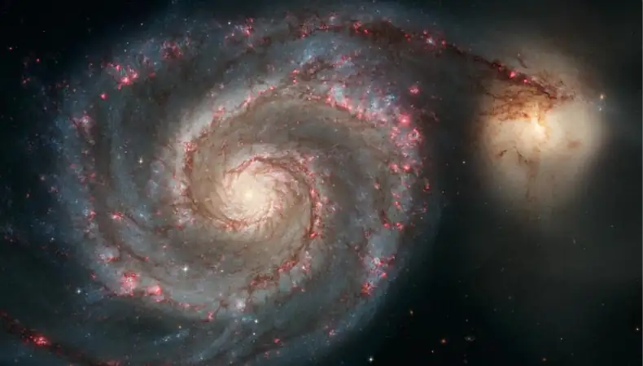
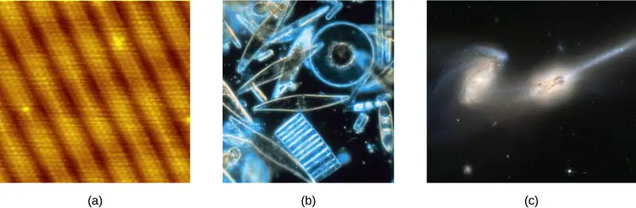
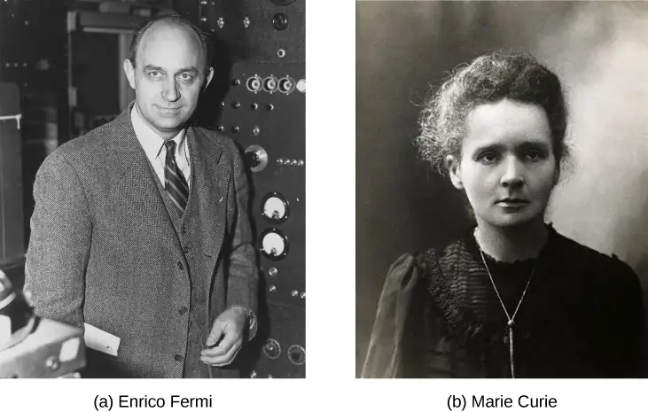
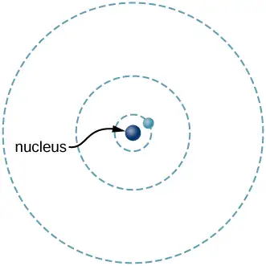
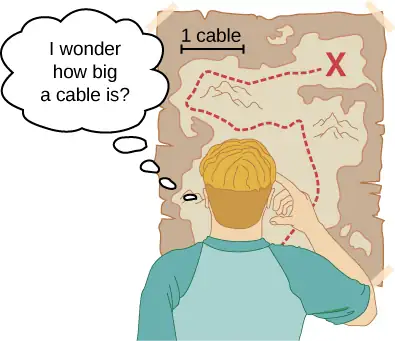
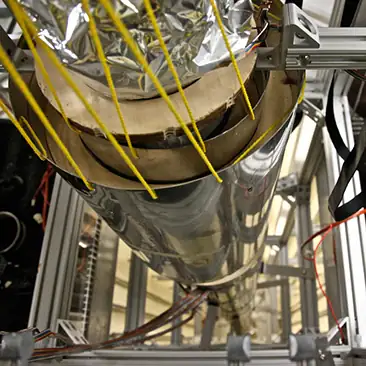
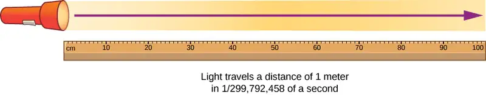
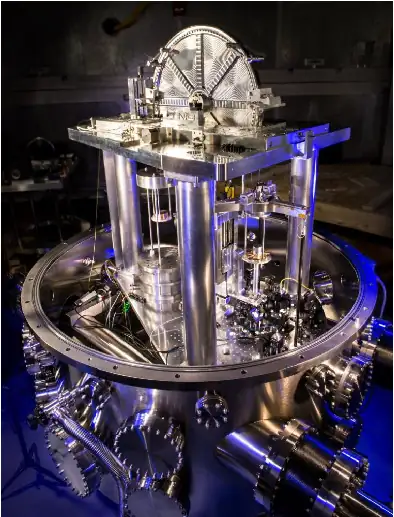
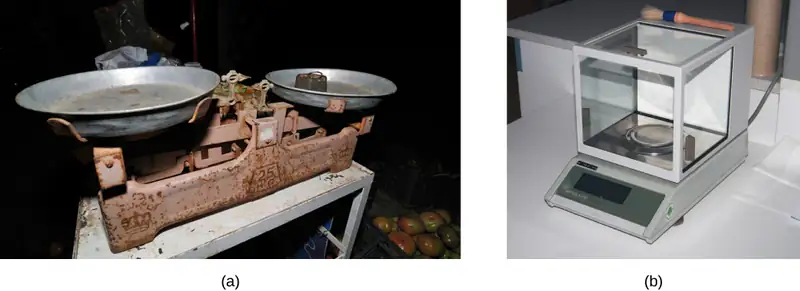
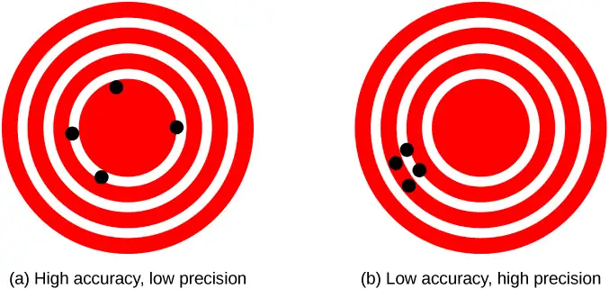

Chapter 1: Units and Measurement¶
Introduction¶

As noted in the figure caption, the chapter-opening image is of the Whirlpool Galaxy, which we examine in the first section of this chapter. Galaxies are as immense as atoms are small, yet the same laws of physics describe both, along with all the rest of nature—an indication of the underlying unity in the universe. The laws of physics are surprisingly few, implying an underlying simplicity to nature’s apparent complexity. In this text, you learn about the laws of physics. Galaxies and atoms may seem far removed from your daily life, but as you begin to explore this broad-ranging subject, you may soon come to realize that physics plays a much larger role in your life than you first thought, no matter your life goals or career choice.
1.1 The Scope and Scale of Physics¶
Learning Objectives
By the end of this section, you will be able to:
- Describe the scope of physics.
- Calculate the order of magnitude of a quantity.
- Compare measurable length, mass, and timescales quantitatively.
- Describe the relationships among models, theories, and laws.
Physics is devoted to the understanding of all natural phenomena. In physics, we try to understand physical phenomena at all scales—from the world of subatomic particles to the entire universe. Despite the breadth of the subject, the various subfields of physics share a common core. The same basic training in physics will prepare you to work in any area of physics and the related areas of science and engineering. In this section, we investigate the scope of physics; the scales of length, mass, and time over which the laws of physics have been shown to be applicable; and the process by which science in general, and physics in particular, operates.
The Scope of Physics¶
Take another look at the chapter-opening image. The Whirlpool Galaxy contains billions of individual stars as well as huge clouds of gas and dust. Its companion galaxy is also visible to the right. This pair of galaxies lies a staggering billion trillion miles \((1.4\:\times\:{10}^{21}\text{mi})\) from our own galaxy (which is called the Milky Way). The stars and planets that make up the Whirlpool Galaxy might seem to be the furthest thing from most people’s everyday lives, but the Whirlpool is a great starting point to think about the forces that hold the universe together. The forces that cause the Whirlpool Galaxy to act as it does are thought to be the same forces we contend with here on Earth, whether we are planning to send a rocket into space or simply planning to raise the walls for a new home. The gravity that causes the stars of the Whirlpool Galaxy to rotate and revolve is thought to be the same as what causes water to flow over hydroelectric dams here on Earth. When you look up at the stars, realize the forces out there are the same as the ones here on Earth. Through a study of physics, you may gain a greater understanding of the interconnectedness of everything we can see and know in this universe.
Humans have created and manufactured millions of different objects. Successive technological periods (often referred to as the Stone Age, the Bronze Age, the Iron Age, and so on) are marked by knowledge of the physical properties of certain materials and the ability to manipulate them. This knowledge all stems from physics, whether it's the way a rock would flake when constructing a spear point, the effect of integrating carbon with iron in South Indian and Sri Lankan furnaces to create the earliest high-quality steel, or the proper way to combine perfectly ground and polished pieces of glass to create optical instruments. Our current technological age, the Information Age, can be traced to critical innovations made by people from all backgrounds working together. Mohamed M. Atalla and Dawon Kahng, for example, invented the MOSFET (metal-oxide-semiconductor field-effect transistor). Although unknown to most people, this tiny device, created in 1959 by an Egyptian-born scientist and a Korean-born scientist working in a lab in New Jersey (U.S.), is the basis for modern electronics. More MOSFETs have been produced than any other object in human history. They are used in computers, smartphones, microwave ovens, automotive controls, medical instruments, and nearly every other electronic device.
Next, think about the most exciting modern technologies that you have heard about in the news, such as trains that levitate above tracks, “invisibility cloaks” that bend light around them, and microscopic robots that fight cancer cells in our bodies. All these groundbreaking advances, commonplace or unbelievable, rely on the principles of physics. Aside from playing a significant role in technology, professionals such as engineers, pilots, physicians, physical therapists, electricians, and computer programmers apply physics concepts in their daily work. For example, a pilot must understand how wind forces affect a flight path; a physical therapist must understand how the muscles in the body experience forces as they move and bend. As you will learn in this text, the principles of physics are propelling new, exciting technologies, and these principles are applied in a wide range of careers.
The underlying order of nature makes science in general, and physics in particular, interesting and enjoyable to study. For example, what do a bag of chips and a car battery have in common? Both contain energy that can be converted to other forms. The law of conservation of energy (which says that energy can change form but is never lost) ties together such topics as food calories, batteries, heat, light, and watch springs. Understanding this law makes it easier to learn about the various forms energy takes and how they relate to one another. Apparently unrelated topics are connected through broadly applicable physical laws, permitting an understanding beyond just the memorization of lists of facts.
Science consists of theories and laws that are the general truths of nature, as well as the body of knowledge they encompass. Scientists are continuously trying to expand this body of knowledge and to perfect the expression of the laws that describe it. Physics, which comes from the Greek phúsis, meaning “nature,” is concerned with describing the interactions of energy, matter, space, and time to uncover the fundamental mechanisms that underlie every phenomenon. This concern for describing the basic phenomena in nature essentially defines the scope of physics.
Physics aims to understand the world around us at the most basic level. It emphasizes the use of a small number of quantitative laws to do this, which can be useful to other fields pushing the performance boundaries of existing technologies. Consider a smartphone (Figure 1.2). Physics describes how electricity interacts with the various circuits inside the device. This knowledge helps engineers select the appropriate materials and circuit layout when building a smartphone. Knowledge of the physics underlying these devices is required to shrink their size or increase their processing speed. Or, think about a GPS. Physics describes the relationship between the speed of an object, the distance over which it travels, and the time it takes to travel that distance. GPS relies on precise calculations that account for variations in the Earth's landscapes, the exact distance between orbiting satellites, and even the effect of a complex occurrence of time dilation. Most of these calculations are founded on algorithms developed by Gladys West, a mathematician and computer scientist who programmed the first computers capable of highly accurate remote sensing and positioning. When you use a GPS device, it utilizes these algorithms to recognize where you are and how your position relates to other objects on Earth.
Knowledge of physics is useful in everyday situations as well as in nonscientific professions. It can help you understand how microwave ovens work, why metals should not be put into them, and why they might affect pacemakers. Physics allows you to understand the hazards of radiation and to evaluate these hazards rationally and more easily. Physics also explains the reason why a black car radiator helps remove heat in a car engine, and it explains why a white roof helps keep the inside of a house cool. Similarly, the operation of a car’s ignition system as well as the transmission of electrical signals throughout our body’s nervous system are much easier to understand when you think about them in terms of basic physics.
Physics is a key element of many important disciplines and contributes directly to others. Chemistry, for example—since it deals with the interactions of atoms and molecules—has close ties to atomic and molecular physics. Most branches of engineering are concerned with designing new technologies, processes, or structures within the constraints set by the laws of physics. In architecture, physics is at the heart of structural stability and is involved in the acoustics, heating, lighting, and cooling of buildings. Parts of geology rely heavily on physics, such as radioactive dating of rocks, earthquake analysis, and heat transfer within Earth. Some disciplines, such as biophysics and geophysics, are hybrids of physics and other disciplines.
Physics has many applications in the biological sciences. On the microscopic level, it helps describe the properties of cells and their environments. On the macroscopic level, it explains the heat, work, and power associated with the human body and its various organ systems. Physics is involved in medical diagnostics, such as radiographs, magnetic resonance imaging, and ultrasonic blood flow measurements. Medical therapy sometimes involves physics directly; for example, cancer radiotherapy uses ionizing radiation. Physics also explains sensory phenomena, such as how musical instruments make sound, how the eye detects color, and how lasers transmit information.
It is not necessary to study all applications of physics formally. What is most useful is knowing the basic laws of physics and developing skills in the analytical methods for applying them. The study of physics also can improve your problem-solving skills. Furthermore, physics retains the most basic aspects of science, so it is used by all the sciences, and the study of physics makes other sciences easier to understand.
The Scale of Physics¶
From the discussion so far, it should be clear that to accomplish your goals in any of the various fields within the natural sciences and engineering, a thorough grounding in the laws of physics is necessary. The reason for this is simply that the laws of physics govern everything in the observable universe at all measurable scales of length, mass, and time. Now, that is easy enough to say, but to come to grips with what it really means, we need to get a little bit quantitative. So, before surveying the various scales that physics allows us to explore, let’s first look at the concept of “order of magnitude,” which we use to come to terms with the vast ranges of length, mass, and time that we consider in this text (Figure 1.3).

Order of magnitude¶
The order of magnitude of a number is the power of 10 that most closely approximates it. Thus, the order of magnitude refers to the scale (or size) of a value. Each power of 10 represents a different order of magnitude. For example, \({10}^{1},{10}^{2},{10}^{3},\) and so forth, are all different orders of magnitude, as are \({10}^{0}=1,{10}^{-1},{10}^{-2},\) and \({10}^{-3}.\) To find the order of magnitude of a number, take the base-10 logarithm of the number and round it to the nearest integer, then the order of magnitude of the number is simply the resulting power of 10. For example, the order of magnitude of 800 is 103 because \(\log_{10}800\approx 2.903,\) which rounds to 3. Similarly, the order of magnitude of 450 is 103 because \(\log_{10}450\approx 2.653,\) which rounds to 3 as well. Thus, we say the numbers 800 and 450 are of the same order of magnitude: 103. However, the order of magnitude of 250 is 102 because \(\log_{10}250\approx 2.397,\) which rounds to 2.
An equivalent but quicker way to find the order of magnitude of a number is first to write it in scientific notation and then check to see whether the first factor is greater than or less than \(\sqrt{10}={10}^{0.5}\approx 3.\) The idea is that \(\sqrt{10}={10}^{0.5}\) is halfway between \(1={10}^{0}\) and \(10={10}^{1}\) on a log base-10 scale. Thus, if the first factor is less than \(\sqrt{10},\) then we round it down to 1 and the order of magnitude is simply whatever power of 10 is required to write the number in scientific notation. On the other hand, if the first factor is greater than \(\sqrt{10},\) then we round it up to 10 and the order of magnitude is one power of 10 higher than the power needed to write the number in scientific notation. For example, the number 800 can be written in scientific notation as \(8\:\times\:{10}^{2}.\) Because 8 is bigger than \(\sqrt{10}\approx 3,\) we say the order of magnitude of 800 is \({10}^{2+1}={10}^{3}.\) The number 450 can be written as \(4.5\:\times\:{10}^{2},\) so its order of magnitude is also 103 because 4.5 is greater than 3. However, 250 written in scientific notation is \(2.5\:\times\:{10}^{2}\) and 2.5 is less than 3, so its order of magnitude is \({10}^{2}.\)
The order of magnitude of a number is designed to be a ballpark estimate for the scale (or size) of its value. It is simply a way of rounding numbers consistently to the nearest (on a logarithmic scale) power of 10. In other words, if numbers differ by one order of magnitude, the one is larger than the other by a multiplicative factor of about ten. This makes doing rough mental math with very big and very small numbers easier. For example, the diameter of a hydrogen atom is on the order of 10−10 m, whereas the diameter of the Sun is on the order of 109 m, so it would take roughly \({10}^{9}\text{/}{10}^{-10}={10}^{19}\) hydrogen atoms to stretch across the diameter of the Sun. This is much easier to do in your head than using the more precise values of \(1.06\:\times\:{10}^{-10}\text{m}\) for a hydrogen atom diameter and \(1.39\:\times\:{10}^{9}\text{m}\) for the Sun’s diameter, to find that it would take \(1.31\:\times\:{10}^{19}\) hydrogen atoms to stretch across the Sun’s diameter. In addition to being easier, the rough estimate is also nearly as informative as the precise calculation.
Known ranges of length, mass, and time¶
The vastness of the universe and the breadth over which physics applies are illustrated by the wide range of examples of known lengths, masses, and times (given as orders of magnitude) in Figure 1.4. Examining this table will give you a feeling for the range of possible topics in physics and numerical values. A good way to appreciate the vastness of the ranges of values in Figure 1.4 is to try to answer some simple comparative questions, such as the following:
- How many hydrogen atoms does it take to stretch across the diameter of the Sun?
(Answer: 109 m/10–10 m = 1019 hydrogen atoms) - How many protons are there in a bacterium?
(Answer: 10–15 kg/10–27 kg = 1012 protons) - How many floating-point operations can a supercomputer do in 1 day?
(Answer: 105 s/10–17 s = 1022 floating-point operations)
In studying Figure 1.4, take some time to come up with similar questions that interest you and then try answering them. Doing this can breathe some life into almost any table of numbers.
![This table of orders of magnitude of length, mass and time has three columns and thirteen rows. The first row is a header row and it labels each column, “length in meters (m),” “Masses in kilograms (kg),” and “time in seconds (s).” Under the “length in meters” column are the following entries: 10 to the minus 15 meters equals diameter of proton; 10 to the minus 14 meters equals diameter of large nucleus; 10 to the minus 10 meters equals diameter of hydrogen atom; 10 to the minus 7 meters equals diameter of typical virus; 10 to the minus 2 meters equals pinky fingernail width; 10 to the 0 meters equals height of 4 year old child, and a drawing of a child measuring himself against a meter stick is included; 10 to the 2 meters equals length of football field; 10 to the 7 meters equals diameter of earth; 10 to the 13 meters equals diameter of solar system; 10 to the 16 meters equals distance light travels in a year (one light year); 10 to the 21 meters equals milky way diameter; 10 to the 26 meters equals distance to edge of observable universe. Under the “Masses in kilograms” column are the following entries: 10 to the -30 kilograms equals mass of electron; 10 to the -27 kilograms equals mass of proton; 10 to the -15 kilograms equals mass of bacterium; 10 to the -5 kilograms equals mass of mosquito; 10 to the -2 kilograms equals mass of hummingbird; 10 to the 0 kilograms equals mass of liter of water, and a drawing of a balance scale with a liter on one side and a 1 kilogram mass on the other is shown; 10 to the 2 kilograms equals mass of person; 10 to the 19 kilograms equals mass of atmosphere; 10 to the 22 kilograms equals mass of moon; 10 to the 25 kilograms equals mass of earth; 10 to the 30 kilograms equals mass of sun; 10 to the 53 kilograms equals upper limit on mass of known universe. Under the “Time in seconds” column are the following entries: 10 to the -22 seconds equals mean lifetime of very unstable nucleus; 10 to the -17 seconds equals time for a single floating point operation in a supercomputer; 10 to the -15 seconds equals time for one oscillation of visible light; 10 to the -13 seconds equals time for one vibration of an atom in a solid; 10 to the -3 seconds equals duration of a nerve impulse; 10 to the 0 equals time for one heartbeat, and a drawing of the heart with a plot of three pulses is shown. The peak of the first pulse is labeled P. The next pulse is larger amplitude and shorter duration. The start of the second pulse is labeled Q, its peak is labeled R, and its end is labeled S. The peak of the third pulse is labeled T. The entries in the column continue as follows: 10 to the 5 seconds equals one day; 10 to the 7 seconds equals one year; 10 to the 9 seconds equals human lifetime; 10 to the 11 seconds equals recorded human history; 10 to the 17 seconds equals age of earth; 10 to the 18 seconds equals age of universe;](img/cnx-uphysics-01-01-magnittb.webp)
Media
Visit this site to explore interactively the vast range of length scales in our universe. Scroll down and up the scale to view hundreds of organisms and objects, and click on the individual objects to learn more about each one.
Building Models¶
How did we come to know the laws governing natural phenomena? What we refer to as the laws of nature are concise descriptions of the universe around us. They are human statements of the underlying laws or rules that all natural processes follow. Such laws are intrinsic to the universe; humans did not create them and cannot change them. We can only discover and understand them. Their discovery is a very human endeavor, with all the elements of mystery, imagination, struggle, triumph, and disappointment inherent in any creative effort (Figure 1.5). The cornerstone of discovering natural laws is observation; scientists must describe the universe as it is, not as we imagine it to be.

A model is a representation of something that is often too difficult (or impossible) to display directly. Although a model is justified by experimental tests, it is only accurate in describing certain aspects of a physical system. An example is the Bohr model of single-electron atoms, in which the electron is pictured as orbiting the nucleus, analogous to the way planets orbit the Sun (Figure 1.6). We cannot observe electron orbits directly, but the mental image helps explain some of the observations we can make, such as the emission of light from hot gases (atomic spectra). However, other observations show that the picture in the Bohr model is not really what atoms look like. The model is “wrong,” but is still useful for some purposes. Physicists use models for a variety of purposes. For example, models can help physicists analyze a scenario and perform a calculation or models can be used to represent a situation in the form of a computer simulation. Ultimately, however, the results of these calculations and simulations need to be double-checked by other means—namely, observation and experimentation.

The word theory means something different to scientists than what is often meant when the word is used in everyday conversation. In particular, to a scientist a theory is not the same as a “guess” or an “idea” or even a “hypothesis.” The phrase “it’s just a theory” seems meaningless and silly to scientists because science is founded on the notion of theories. To a scientist, a theory is a testable explanation for patterns in nature supported by scientific evidence and verified multiple times by various groups of researchers. Some theories include models to help visualize phenomena whereas others do not. Newton’s theory of gravity, for example, does not require a model or mental image, because we can observe the objects directly with our own senses. Although models are meant only to describe certain aspects of a physical system accurately, a theory should describe all aspects of any system that falls within its domain of applicability. In particular, any experimentally testable implication of a theory should be verified. If an experiment ever shows an implication of a theory to be false, then the theory is either thrown out or modified suitably (for example, by limiting its domain of applicability).
A law uses concise language to describe a generalized pattern in nature supported by scientific evidence and repeated experiments. Often, a law can be expressed in the form of a single mathematical equation. Laws and theories are similar in that they are both scientific statements that result from a tested hypothesis and are supported by scientific evidence. However, the designation law is usually reserved for a concise and very general statement that describes phenomena in nature, such as the law that energy is conserved during any process, or Newton’s second law of motion, which relates force (F), mass (m), and acceleration (a) by the simple equation \(F=ma.\) A theory, in contrast, is a less concise statement of observed behavior. For example, the theory of evolution and the theory of relativity cannot be expressed concisely enough to be considered laws. The biggest difference between a law and a theory is that a theory is much more complex and dynamic. A law describes a single action whereas a theory explains an entire group of related phenomena. Less broadly applicable statements are usually called principles (such as Pascal’s principle, which is applicable only in fluids), but the distinction between laws and principles often is not made carefully.
The models, theories, and laws we devise sometimes imply the existence of objects or phenomena that are as yet unobserved. These predictions are remarkable triumphs and tributes to the power of science. It is the underlying order in the universe that enables scientists to make such spectacular predictions. However, if experimentation does not verify our predictions, then the theory or law is wrong, no matter how elegant or convenient it is. Laws can never be known with absolute certainty because it is impossible to perform every imaginable experiment to confirm a law for every possible scenario. Physicists operate under the assumption that all scientific laws and theories are valid until a counterexample is observed. If a good-quality, verifiable experiment contradicts a well-established law or theory, then the law or theory must be modified or overthrown completely.
The study of science in general, and physics in particular, is an adventure much like the exploration of an uncharted ocean. Discoveries are made; models, theories, and laws are formulated; and the beauty of the physical universe is made more sublime for the insights gained.
1.2 Units and Standards¶
Learning Objectives
By the end of this section, you will be able to:
- Describe how SI base units are defined.
- Describe how derived units are created from base units.
- Express quantities given in SI units using metric prefixes.
As we saw previously, the range of objects and phenomena studied in physics is immense. From the incredibly short lifetime of a nucleus to the age of Earth, from the tiny sizes of subnuclear particles to the vast distance to the edges of the known universe, from the force exerted by a jumping flea to the force between Earth and the Sun, there are enough factors of 10 to challenge the imagination of even the most experienced scientist. Giving numerical values for physical quantities and equations for physical principles allows us to understand nature much more deeply than qualitative descriptions alone. To comprehend these vast ranges, we must also have accepted units in which to express them. We shall find that even in the potentially mundane discussion of meters, kilograms, and seconds, a profound simplicity of nature appears: all physical quantities can be expressed as combinations of only seven base physical units.
We define a physical quantity either by specifying how it is measured or by stating how it is calculated from other measurements. For example, we might define distance and time by specifying methods for measuring them, such as using a meter stick and a stopwatch. Then, we could define average speed by stating that it is calculated as the total distance traveled divided by time of travel.
Measurements of physical quantities are expressed in terms of units, which are standardized values. For example, the length of a race, which is a physical quantity, can be expressed in units of meters (for sprinters) or kilometers (for distance runners). Without standardized units, it would be extremely difficult for scientists to express and compare measured values in a meaningful way (Figure 1.7).

Two major systems of units are used in the world: SI units (for the French Système International d’Unités), also known as the metric system, and English units (also known as the customary or imperial system). English units were historically used in nations once ruled by the British Empire and are still widely used in the United States. English units may also be referred to as the foot–pound–second (fps) system, as opposed to the centimeter–gram–second (cgs) system. You may also encounter the term SAE units, named after the Society of Automotive Engineers. Products such as fasteners and automotive tools (for example, wrenches) that are measured in inches rather than metric units are referred to as SAE fasteners or SAE wrenches.
Virtually every other country in the world (except the United States) now uses SI units as the standard. The metric system is also the standard system agreed on by scientists and mathematicians.
SI Units: Base and Derived Units¶
In any system of units, the units for some physical quantities must be defined through a measurement process. These are called the base quantities for that system and their units are the system’s base units. All other physical quantities can then be expressed as algebraic combinations of the base quantities. Each of these physical quantities is then known as a derived quantity and each unit is called a derived unit. The choice of base quantities is somewhat arbitrary, as long as they are independent of each other and all other quantities can be derived from them. Typically, the goal is to choose physical quantities that can be measured accurately to a high precision as the base quantities. The reason for this is simple. Since the derived units can be expressed as algebraic combinations of the base units, they can only be as accurate and precise as the base units from which they are derived.
Based on such considerations, the International Standards Organization recommends using seven base quantities, which form the International System of Quantities (ISQ). These are the base quantities used to define the SI base units. Table 1.1 lists these seven ISQ base quantities and the corresponding SI base units.
Table 1.1 ISQ Base Quantities and Their SI Units
| ISQ Base Quantity | SI Base Unit |
|---|---|
| Length | meter (m) |
| Mass | kilogram (kg) |
| Time | second (s) |
| Electrical current | ampere (A) |
| Thermodynamic temperature | kelvin (K) |
| Amount of substance | mole (mol) |
| Luminous intensity | candela (cd) |
You are probably already familiar with some derived quantities that can be formed from the base quantities in Table 1.1. For example, the geometric concept of area is always calculated as the product of two lengths. Thus, area is a derived quantity that can be expressed in terms of SI base units using square meters \((\text{m}\:\times\:\text{m}=\text{m}^{2}).\) Similarly, volume is a derived quantity that can be expressed in cubic meters \((\text{m}^{3}).\) Speed is length per time; so in terms of SI base units, we could measure it in meters per second (m/s). Volume mass density (or just density) is mass per volume, which is expressed in terms of SI base units such as kilograms per cubic meter (kg/m3). Angles can also be thought of as derived quantities because they can be defined as the ratio of the arc length subtended by two radii of a circle to the radius of the circle. This is how the radian is defined. Depending on your background and interests, you may be able to come up with other derived quantities, such as the mass flow rate (kg/s) or volume flow rate (m3/s) of a fluid, electric charge \((\text{A}\cdot\text{s}),\) mass flux density \(\text{[kg/}(\text{m}^{2}\cdot\text{s)],}\) and so on. We will see many more examples throughout this text. For now, the point is that every physical quantity can be derived from the seven base quantities in Table 1.1, and the units of every physical quantity can be derived from the seven SI base units.
For the most part, we use SI units in this text. Non-SI units are used in a few applications in which they are in very common use, such as the measurement of temperature in degrees Celsius \(({}^{\circ}\text{C}),\) the measurement of fluid volume in liters (L), and the measurement of energies of elementary particles in electron-volts (eV). Whenever non-SI units are discussed, they are tied to SI units through conversions. For example, 1 L is \({10}^{-3}{\:\text{m}}^{3}.\)
Media
Check out a comprehensive source of information on SI units at the National Institute of Standards and Technology (NIST) Reference on Constants, Units, and Uncertainty.
Units of Time, Length, and Mass: The Second, Meter, and Kilogram¶
The initial chapters in this textbook are concerned with mechanics, fluids, and waves. In these subjects all pertinent physical quantities can be expressed in terms of the base units of length, mass, and time. Therefore, we now turn to a discussion of these three base units, leaving discussion of the others until they are needed later.
The second¶
The SI unit for time, the second (abbreviated s), has a long history. For many years it was defined as 1/86,400 of a mean solar day. More recently, a new standard was adopted to gain greater accuracy and to define the second in terms of a nonvarying or constant physical phenomenon (because the solar day is getting longer as a result of the very gradual slowing of Earth’s rotation). Cesium atoms can be made to vibrate in a very steady way, and these vibrations can be readily observed and counted. In 1967, the second was redefined as the time required for 9,192,631,770 of these vibrations to occur (Figure 1.8). Note that this may seem like more precision than you would ever need, but it isn’t—GPSs rely on the precision of atomic clocks to be able to give you turn-by-turn directions on the surface of Earth, far from the satellites broadcasting their location.

The meter¶
The SI unit for length is the meter (abbreviated m); its definition has also changed over time to become more precise. The meter was first defined in 1791 as 1/10,000,000 of the distance from the equator to the North Pole. This measurement was improved in 1889 by redefining the meter to be the distance between two engraved lines on a platinum–iridium bar now kept near Paris. By 1960, it had become possible to define the meter even more accurately in terms of the wavelength of light, so it was again redefined as 1,650,763.73 wavelengths of orange light emitted by krypton atoms. In 1983, the meter was given its current definition (in part for greater accuracy) as the distance light travels in a vacuum in 1/299,792,458 of a second (Figure 1.9). This change came after knowing the speed of light to be exactly 299,792,458 m/s.

The kilogram¶
The SI unit for mass is the kilogram (abbreviated kg); From 1795–2018 it was defined to be the mass of a platinum–iridium cylinder kept with the old meter standard at the International Bureau of Weights and Measures near Paris. However, this cylinder has lost roughly 50 micrograms since it was created. Because this is the standard, this has shifted how we defined a kilogram. Therefore, a new definition was adopted in May 2019 based on the Planck constant and other constants which will never change in value. We will study Planck’s constant in quantum mechanics, which is an area of physics that describes how the smallest pieces of the universe work. The kilogram is measured on a Kibble balance (see Figure 1.10). When a weight is placed on a Kibble balance, an electrical current is produced that is proportional to Planck’s constant. Since Planck’s constant is defined, the exact current measurements in the balance define the kilogram.

Metric Prefixes¶
SI units are part of the metric system, which is convenient for scientific and engineering calculations because the units are categorized by factors of 10. Table 1.2 lists the metric prefixes and symbols used to denote various factors of 10 in SI units. For example, a centimeter is one-hundredth of a meter (in symbols, 1 cm = 10–2 m) and a kilometer is a thousand meters (1 km = 103 m). Similarly, a megagram is a million grams (1 Mg = 106 g), a nanosecond is a billionth of a second (1 ns = 10–9 s), and a terameter is a trillion meters (1 Tm = 1012 m).
Table 1.2 Metric Prefixes for Powers of 10 and Their Symbols
| Prefix | Symbol | Meaning | Prefix | Symbol | Meaning |
|---|---|---|---|---|---|
| yotta- | Y | 1024 | yocto- | y | 10–24 |
| zetta- | Z | 1021 | zepto- | z | 10–21 |
| exa- | E | 1018 | atto- | a | 10–18 |
| peta- | P | 1015 | femto- | f | 10–15 |
| tera- | T | 1012 | pico- | p | 10–12 |
| giga- | G | 109 | nano- | n | 10–9 |
| mega- | M | 106 | micro- | \(\mu\) | 10–6 |
| kilo- | k | 103 | milli- | m | 10–3 |
| hecto- | h | 102 | centi- | c | 10–2 |
| deka- | da | 101 | deci- | d | 10–1 |
The only rule when using metric prefixes is that you cannot “double them up.” For example, if you have measurements in petameters (1 Pm = 1015 m), it is not proper to talk about megagigameters, although \({10}^{6}\:\times\:{10}^{9}={10}^{15}.\) In practice, the only time this becomes a bit confusing is when discussing masses. As we have seen, the base SI unit of mass is the kilogram (kg), but metric prefixes need to be applied to the gram (g), because we are not allowed to “double-up” prefixes. Thus, a thousand kilograms (103 kg) is written as a megagram (1 Mg) since
Incidentally, 103 kg is also called a metric ton, abbreviated t. This is one of the units outside the SI system considered acceptable for use with SI units.
As we see in the next section, metric systems have the advantage that conversions of units involve only powers of 10. There are 100 cm in 1 m, 1000 m in 1 km, and so on. In nonmetric systems, such as the English system of units, the relationships are not as simple—there are 12 in. in 1 ft, 5280 ft in 1 mi, and so on.
Another advantage of metric systems is that the same unit can be used over extremely large ranges of values simply by scaling it with an appropriate metric prefix. The prefix is chosen by the order of magnitude of physical quantities commonly found in the task at hand. For example, distances in meters are suitable in construction, whereas distances in kilometers are appropriate for air travel, and nanometers are convenient in optical design. With the metric system there is no need to invent new units for particular applications. Instead, we rescale the units with which we are already familiar.
Example 1.1 Using Metric Prefixes
Restate the mass \(1.93\:\times\:{10}^{13}\text{kg}\) using a metric prefix such that the resulting numerical value is bigger than one but less than 1000.
Strategy
Since we are not allowed to “double-up” prefixes, we first need to restate the mass in grams by replacing the prefix symbol k with a factor of 103 (see Table 1.2). Then, we should see which two prefixes in Table 1.2 are closest to the resulting power of 10 when the number is written in scientific notation. We use whichever of these two prefixes gives us a number between one and 1000.
Solution
Replacing the k in kilogram with a factor of 103, we find that
From Table 1.2, we see that 1016 is between “peta-” (1015) and “exa-” (1018). If we use the “peta-” prefix, then we find that \(1.93\:\times\:{10}^{16}\text{g}=1.93\:\times\:{10}^{1}\text{Pg},\) since \(16=1+15.\) Alternatively, if we use the “exa-” prefix we find that \(1.93\:\times\:{10}^{16}\text{g}=1.93\:\times\:{10}^{-2}\text{Eg},\) since \(16=-2+18.\) Because the problem asks for the numerical value between one and 1000, we use the “peta-” prefix and the answer is 19.3 Pg.
Significance
It is easy to make silly arithmetic errors when switching from one prefix to another, so it is always a good idea to check that our final answer matches the number we started with. An easy way to do this is to put both numbers in scientific notation and count powers of 10, including the ones hidden in prefixes. If we did not make a mistake, the powers of 10 should match up. In this problem, we started with \(1.93\:\times\:{10}^{13}\text{kg,}\) so we have 13 + 3 = 16 powers of 10. Our final answer in scientific notation is \(1.93\:\times\:{10}^{1}\) Pg, so we have 1 + 15 = 16 powers of 10. So, everything checks out.
If this mass arose from a calculation, we would also want to check to determine whether a mass this large makes any sense in the context of the problem. For this, Figure 1.4 might be helpful.
Check Your Understanding
Restate \(4.79\:\times\:{10}^{5}\text{kg}\) using a metric prefix such that the resulting number is bigger than one but less than 1000.
Answer
\(4.79\:\times\:{10}^{2}\) Mg or 479 Mg
1.3 Unit Conversion¶
Learning Objectives
By the end of this section, you will be able to:
- Use conversion factors to express the value of a given quantity in different units.
It is often necessary to convert from one unit to another. For example, if you are reading a European cookbook, some quantities may be expressed in units of liters and you need to convert them to cups. Or perhaps you are reading walking directions from one location to another and you are interested in how many miles you will be walking. In this case, you may need to convert units of feet or meters to miles.
Let’s consider a simple example of how to convert units. Suppose we want to convert 80 m to kilometers. The first thing to do is to list the units you have and the units to which you want to convert. In this case, we have units in meters and we want to convert to kilometers. Next, we need to determine a conversion factor relating meters to kilometers. A conversion factor is a ratio that expresses how many of one unit are equal to another unit. For example, there are 12 in. in 1 ft, 1609 m in 1 mi, 100 cm in 1 m, 60 s in 1 min, and so on. Refer to Appendix B for a more complete list of conversion factors. In this case, we know that there are 1000 m in 1 km. Now we can set up our unit conversion. We write the units we have and then multiply them by the conversion factor so the units cancel out, as shown:
Note that the unwanted meter unit cancels, leaving only the desired kilometer unit. You can use this method to convert between any type of unit. Now, the conversion of 80 m to kilometers is simply the use of a metric prefix, as we saw in the preceding section, so we can get the same answer just as easily by noting that
since “kilo-” means 103 (see Table 1.2) and \(1=-2+3.\) However, using conversion factors is handy when converting between units that are not metric or when converting between derived units, as the following examples illustrate.
Example 1.2 Converting Nonmetric Units to Metric
The distance from the university to home is 10 mi and it usually takes 20 min to drive this distance. Calculate the average speed in meters per second (m/s). (Note: Average speed is distance traveled divided by time of travel.)
Strategy
First we calculate the average speed using the given units, then we can get the average speed into the desired units by picking the correct conversion factors and multiplying by them. The correct conversion factors are those that cancel the unwanted units and leave the desired units in their place. In this case, we want to convert miles to meters, so we need to know the fact that there are 1609 m in 1 mi. We also want to convert minutes to seconds, so we use the conversion of 60 s in 1 min.
Solution
-
Calculate average speed. Average speed is distance traveled divided by time of travel. (Take this definition as a given for now. Average speed and other motion concepts are covered in later chapters.) In equation form,
\[ \text{Average speed}=\frac{\text{Distance}}{\text{Time}}. \] -
Substitute the given values for distance and time:
\[ \text{Average speed}=\frac{10\:\text{mi}}{20\:\min}=0.50\:\frac{\text{mi}}{\min}. \] -
Convert miles per minute to meters per second by multiplying by the conversion factor that cancels miles and leave meters, and also by the conversion factor that cancels minutes and leave seconds:
\[ 0.50\:\frac{\cancel{\text{mile}}}{\cancel{\min}}\:\times\:\frac{1609\:\text{m}}{1\:\cancel{\text{mile}}}\:\times\:\frac{1\:\cancel{\min}}{60\:\text{s}}=\frac{(0.50)(1609)}{60}\:\text{m/s}=13\:\text{m/s}. \]
Significance
Check the answer in the following ways:
- Be sure the units in the unit conversion cancel correctly. If the unit conversion factor was written upside down, the units do not cancel correctly in the equation. We see the “miles” in the numerator in 0.50 mi/min cancels the “mile” in the denominator in the first conversion factor. Also, the “min” in the denominator in 0.50 mi/min cancels the “min” in the numerator in the second conversion factor.
- Check that the units of the final answer are the desired units. The problem asked us to solve for average speed in units of meters per second and, after the cancellations, the only units left are a meter (m) in the numerator and a second (s) in the denominator, so we have indeed obtained these units.
Check Your Understanding
Light travels about 9 Pm in a year. Given that a year is about \(3\:\times\:{10}^{7}\text{s},\) what is the speed of light in meters per second?
Answer
\(3\:\times\:{10}^{8}\text{m/s}\)
Example 1.3 Converting between Metric Units
The density of iron is \(7.86\:\text{g/cm}^{3}\) under standard conditions. Convert this to kg/m3.
Strategy
We need to convert grams to kilograms and cubic centimeters to cubic meters. The conversion factors we need are \(1\:\text{kg}={10}^{3}\text{g}\) and \(1\:\text{cm}={10}^{-2}\text{m}.\) However, we are dealing with cubic centimeters \(\text{(cm}^{3}=\text{cm}\:\times\:\text{cm}\:\times\:\text{cm),}\) so we have to use the second conversion factor three times (that is, we need to cube it). The idea is still to multiply by the conversion factors in such a way that they cancel the units we want to get rid of and introduce the units we want to keep.
Solution
Significance
Remember, it’s always important to check the answer.
- Be sure to cancel the units in the unit conversion correctly. We see that the gram (“g”) in the numerator in 7.86 g/cm3 cancels the “g” in the denominator in the first conversion factor. Also, the three factors of “cm” in the denominator in 7.86 g/cm3 cancel with the three factors of “cm” in the numerator that we get by cubing the second conversion factor.
- Check that the units of the final answer are the desired units. The problem asked for us to convert to kilograms per cubic meter. After the cancellations just described, we see the only units we have left are “kg” in the numerator and three factors of “m” in the denominator (that is, one factor of “m” cubed, or “m3”). Therefore, the units on the final answer are correct.
Check Your Understanding
We know from Figure 1.4 that the diameter of Earth is on the order of 107 m, so the order of magnitude of its surface area is 1014 m2. What is that in square kilometers (that is, km2)? (Try doing this both by converting 107 m to km and then squaring it and then by converting 1014 m2 directly to square kilometers. You should get the same answer both ways.)
Answer
\(10^{8}{\:\text{km}}^{2}\)
Unit conversions may not seem very interesting, but not doing them can be costly. One famous example of this situation was seen with the Mars Climate Orbiter. This probe was launched by NASA on December 11, 1998. On September 23, 1999, while attempting to guide the probe into its planned orbit around Mars, NASA lost contact with it. Subsequent investigations showed a piece of software called SM_FORCES (or “small forces”) was recording thruster performance data in the English units of pound-force-seconds (lbf-s). However, other pieces of software that used these values for course corrections expected them to be recorded in the SI units of newton-seconds (N-s), as dictated in the software interface protocols. This error caused the probe to follow a very different trajectory from what NASA thought it was following, which most likely caused the probe either to burn up in the Martian atmosphere or to shoot out into space. This failure to pay attention to unit conversions cost hundreds of millions of dollars, not to mention all the time invested by the scientists and engineers who worked on the project.
Check Your Understanding
Given that 1 lbf (pound-force) is 4.45 N, were the numbers being output by SM_FORCES too big or too small?
Answer
The numbers were too small, by a factor of 4.45.
1.4 Dimensional Analysis¶
Learning Objectives
By the end of this section, you will be able to:
- Find the dimensions of a mathematical expression involving physical quantities.
- Determine whether an equation involving physical quantities is dimensionally consistent.
The dimension of any physical quantity expresses its dependence on the base quantities as a product of symbols (or powers of symbols) representing the base quantities. Table 1.3 lists the base quantities and the symbols used for their dimension. For example, a measurement of length is said to have dimension L or L1, a measurement of mass has dimension M or M1, and a measurement of time has dimension T or T1. Like units, dimensions obey the rules of algebra. Thus, area is the product of two lengths and so has dimension L2, or length squared. Similarly, volume is the product of three lengths and has dimension L3, or length cubed. Speed has dimension length over time, L/T or LT–1. Volumetric mass density has dimension M/L3 or ML–3, or mass over length cubed. In general, the dimension of any physical quantity can be written as \(\text{L}^{a}\text{M}^{b}\text{T}^{c}\text{I}^{d}\Theta^{e}\text{N}^{f}\text{J}^{g}\) for some powers \(a,b,c,d,e,f,\) and g. We can write the dimensions of a length in this form with \(a=1\) and the remaining six powers all set equal to zero: \(\text{L}^{1}=\text{L}^{1}\text{M}^{0}\text{T}^{0}\text{I}^{0}\Theta^{0}\text{N}^{0}\text{J}^{0}.\) Any quantity with a dimension that can be written so that all seven powers are zero (that is, its dimension is \(\text{L}^{0}\text{M}^{0}\text{T}^{0}\text{I}^{0}\Theta^{0}\text{N}^{0}\text{J}^{0}\)) is called dimensionless (or sometimes “of dimension 1,” because anything raised to the zero power is one). Physicists often call dimensionless quantities pure numbers.
Table 1.3 Base Quantities and Their Dimensions
| Base Quantity | Symbol for Dimension |
|---|---|
| Length | L |
| Mass | M |
| Time | T |
| Current | I |
| Thermodynamic temperature | Θ |
| Amount of substance | N |
| Luminous intensity | J |
Physicists often use square brackets around the symbol for a physical quantity to represent the dimensions of that quantity. For example, if \(r\) is the radius of a cylinder and \(h\) is its height, then we write \([r]=\text{L}\) and \([h]=\text{L}\) to indicate the dimensions of the radius and height are both those of length, or L. Similarly, if we use the symbol \(A\) for the surface area of a cylinder and \(V\) for its volume, then [A] = L2 and [V] = L3. If we use the symbol \(m\) for the mass of the cylinder and \(\rho\) for the density of the material from which the cylinder is made, then \([m]=\text{M}\) and \([\rho]=\text{ML}^{-3}.\)
The importance of the concept of dimension arises from the fact that any mathematical equation relating physical quantities must be dimensionally consistent, which means the equation must obey the following rules:
- Every term in an expression must have the same dimensions; it does not make sense to add or subtract quantities of differing dimension (think of the old saying: “You can’t add apples and oranges”). In particular, the expressions on each side of the equality in an equation must have the same dimensions.
- The arguments of any of the standard mathematical functions such as trigonometric functions (such as sine and cosine), logarithms, or exponential functions that appear in the equation must be dimensionless. These functions require pure numbers as inputs and give pure numbers as outputs.
If either of these rules is violated, an equation is not dimensionally consistent and cannot possibly be a correct statement of physical law. This simple fact can be used to check for typos or algebra mistakes, to help remember the various laws of physics, and even to suggest the form that new laws of physics might take. This last use of dimensions is beyond the scope of this text, but is something you may learn later in your academic career.
Example 1.4 Using Dimensions to Remember an Equation
Suppose we need the formula for the area of a circle for some computation. Like many people who learned geometry too long ago to recall with any certainty, two expressions may pop into our mind when we think of circles: \(\pi r^{2}\) and \(2\pi r.\) One expression is the circumference of a circle of radius r and the other is its area. But which is which?
Strategy
One natural strategy is to look it up, but this could take time to find information from a reputable source. Besides, even if we think the source is reputable, we shouldn’t trust everything we read. It is nice to have a way to double-check just by thinking about it. Also, we might be in a situation in which we cannot look things up (such as during a test). Thus, the strategy is to find the dimensions of both expressions by making use of the fact that dimensions follow the rules of algebra. If either expression does not have the same dimensions as area, then it cannot possibly be the correct equation for the area of a circle.
Solution
We know the dimension of area is L2. Now, the dimension of the expression \(\pi r^{2}\) is
since the constant \(\pi\) is a pure number and the radius \(r\) is a length. Therefore, \(\pi r^{2}\) has the dimension of area. Similarly, the dimension of the expression \(2\pi r\) is
since the constants \(2\) and \(\pi\) are both dimensionless and the radius \(r\) is a length. We see that \(2\pi r\) has the dimension of length, which means it cannot possibly be an area.
We rule out \(2\pi r\) because it is not dimensionally consistent with being an area. We see that \(\pi r^{2}\) is dimensionally consistent with being an area, so if we have to choose between these two expressions, \(\pi r^{2}\) is the one to choose.
Significance
This may seem like kind of a silly example, but the ideas are very general. As long as we know the dimensions of the individual physical quantities that appear in an equation, we can check to see whether the equation is dimensionally consistent. On the other hand, knowing that true equations are dimensionally consistent, we can match expressions from our imperfect memories to the quantities for which they might be expressions. Doing this will not help us remember dimensionless factors that appear in the equations (for example, if you had accidentally conflated the two expressions from the example into \(2\pi r^{2},\) then dimensional analysis is no help), but it does help us remember the correct basic form of equations.
Check Your Understanding
Suppose we want the formula for the volume of a sphere. The two expressions commonly mentioned in elementary discussions of spheres are \(4\pi r^{2}\) and \(4\pi r^{3}\text{/}3.\) One is the volume of a sphere of radius r and the other is its surface area. Which one is the volume?
Answer
\(4\pi r^{3}\text{/}3\)
Example 1.5 Checking Equations for Dimensional Consistency
Consider the physical quantities \(s,\) \(v,\) \(a,\) and \(t\) with dimensions \([s]=\text{L},\) \([v]=\text{LT}^{-1},\) \([a]=\text{LT}^{-2},\) and \([t]=\text{T}.\) Determine whether each of the following equations is dimensionally consistent: (a) \(s=vt+0.5at^{2};\) (b) \(s=vt^{2}+0.5at;\) and (c) \(v=\sin(at^{2}\text{/}s).\)
Strategy
By the definition of dimensional consistency, we need to check that each term in a given equation has the same dimensions as the other terms in that equation and that the arguments of any standard mathematical functions are dimensionless.
Solution
a. There are no trigonometric, logarithmic, or exponential functions to worry about in this equation, so we need only look at the dimensions of each term appearing in the equation. There are three terms, one in the left expression and two in the expression on the right, so we look at each in turn:
All three terms have the same dimension, so this equation is dimensionally consistent.
b. Again, there are no trigonometric, exponential, or logarithmic functions, so we only need to look at the dimensions of each of the three terms appearing in the equation:
None of the three terms has the same dimension as any other, so this is about as far from being dimensionally consistent as you can get. The technical term for an equation like this is nonsense.
c. This equation has a trigonometric function in it, so first we should check that the argument of the sine function is dimensionless:
The argument is dimensionless. So far, so good. Now we need to check the dimensions of each of the two terms (that is, the left expression and the right expression) in the equation:
The two terms have different dimensions—meaning, the equation is not dimensionally consistent. This equation is another example of “nonsense.”
Significance
If we are trusting people, these types of dimensional checks might seem unnecessary. But, rest assured, any textbook on a quantitative subject such as physics (including this one) almost certainly contains some equations with typos. Checking equations routinely by dimensional analysis save us the embarrassment of using an incorrect equation. Also, checking the dimensions of an equation we obtain through algebraic manipulation is a great way to make sure we did not make a mistake (or to spot a mistake, if we made one).
Check Your Understanding
Is the equation v = at dimensionally consistent?
Answer
yes
One further point that needs to be mentioned is the effect of the operations of calculus on dimensions. We have seen that dimensions obey the rules of algebra, just like units, but what happens when we take the derivative of one physical quantity with respect to another or integrate a physical quantity over another? The derivative of a function is just the slope of the line tangent to its graph and slopes are ratios, so for physical quantities v and t, we have that the dimension of the derivative of v with respect to t is just the ratio of the dimension of v over that of t:
Similarly, since integrals are just sums of products, the dimension of the integral of v with respect to t is simply the dimension of v times the dimension of t:
By the same reasoning, analogous rules hold for the units of physical quantities derived from other quantities by integration or differentiation.
1.5 Estimates and Fermi Calculations¶
Learning Objectives
By the end of this section, you will be able to:
- Estimate the values of physical quantities.
On many occasions, physicists, other scientists, and engineers need to make estimates for a particular quantity. Other terms sometimes used are guesstimates, order-of-magnitude approximations, back-of-the-envelope calculations, or Fermi calculations. (The physicist Enrico Fermi mentioned earlier was famous for his ability to estimate various kinds of data with surprising precision.) Will that piece of equipment fit in the back of the car or do we need to rent a truck? How long will this download take? About how large a current will there be in this circuit when it is turned on? How many houses could a proposed power plant actually power if it is built? Note that estimating does not mean guessing a number or a formula at random. Rather, estimation means using prior experience and sound physical reasoning to arrive at a rough idea of a quantity’s value. Because the process of determining a reliable approximation usually involves the identification of correct physical principles and a good guess about the relevant variables, estimating is very useful in developing physical intuition. Estimates also allow us to perform “sanity checks” on calculations or policy proposals by helping us rule out certain scenarios or unrealistic numbers. They allow us to challenge others (as well as ourselves) in our efforts to learn truths about the world.
Many estimates are based on formulas in which the input quantities are known only to a limited precision. As you develop physics problem-solving skills (which are applicable to a wide variety of fields), you also will develop skills at estimating. You develop these skills by thinking quantitatively and being willing to take risks. As with any skill, experience helps. Familiarity with dimensions (see Table 1.3) and units (see Table 1.1 and Table 1.2), and the scales of base quantities (see Figure 1.4) also helps.
To make some progress in estimating, you need to have some definite ideas about how variables may be related. The following strategies may help you in practicing the art of estimation:
-
Get big lengths from smaller lengths. When estimating lengths, remember that anything can be a ruler. Thus, imagine breaking a big thing into smaller things, estimate the length of one of the smaller things, and multiply to get the length of the big thing. For example, to estimate the height of a building, first count how many floors it has. Then, estimate how big a single floor is by imagining how many people would have to stand on each other’s shoulders to reach the ceiling. Last, estimate the height of a person. The product of these three estimates is your estimate of the height of the building. It helps to have memorized a few length scales relevant to the sorts of problems you find yourself solving. For example, knowing some of the length scales in Figure 1.4 might come in handy. Sometimes it also helps to do this in reverse—that is, to estimate the length of a small thing, imagine a bunch of them making up a bigger thing. For example, to estimate the thickness of a sheet of paper, estimate the thickness of a stack of paper and then divide by the number of pages in the stack. These same strategies of breaking big things into smaller things or aggregating smaller things into a bigger thing can sometimes be used to estimate other physical quantities, such as masses and times.
-
Get areas and volumes from lengths. When dealing with an area or a volume of a complex object, introduce a simple model of the object such as a sphere or a box. Then, estimate the linear dimensions (such as the radius of the sphere or the length, width, and height of the box) first, and use your estimates to obtain the volume or area from standard geometric formulas. If you happen to have an estimate of an object’s area or volume, you can also do the reverse; that is, use standard geometric formulas to get an estimate of its linear dimensions.
-
Get masses from volumes and densities. When estimating masses of objects, it can help first to estimate its volume and then to estimate its mass from a rough estimate of its average density (recall, density has dimension mass over length cubed, so mass is density times volume). For this, it helps to remember that the density of air is around 1 kg/m3, the density of water is 103 kg/m3, and the densest everyday solids max out at around 104 kg/m3. Asking yourself whether an object floats or sinks in either air or water gets you a ballpark estimate of its density. You can also do this the other way around; if you have an estimate of an object’s mass and its density, you can use them to get an estimate of its volume.
-
If all else fails, bound it. For physical quantities for which you do not have a lot of intuition, sometimes the best you can do is think something like: Well, it must be bigger than this and smaller than that. For example, suppose you need to estimate the mass of a moose. Maybe you have a lot of experience with moose and know their average mass offhand. If so, great. But for most people, the best they can do is to think something like: It must be bigger than a person (of order 102 kg) and less than a car (of order 103 kg). If you need a single number for a subsequent calculation, you can take the geometric mean of the upper and lower bound—that is, you multiply them together and then take the square root. For the moose mass example, this would be
\[ {({10}^{2}\:\times\:{10}^{3})}^{0.5}={10}^{2.5}={10}^{0.5}\:\times\:{10}^{2}\approx 3\:\times\:{10}^{2}\text{kg}. \]The tighter the bounds, the better. Also, no rules are unbreakable when it comes to estimation. If you think the value of the quantity is likely to be closer to the upper bound than the lower bound, then you may want to bump up your estimate from the geometric mean by an order or two of magnitude.
-
One “sig. fig.” is fine. There is no need to go beyond one significant figure, or one digit in the coefficient of an expression in scientific notation, when doing calculations to obtain an estimate. In most cases, the order of magnitude is good enough. The goal is just to get in the ballpark figure, so keep the arithmetic as simple as possible.
-
Ask yourself: Does this make any sense? Last, check to see whether your answer is reasonable. How does it compare with the values of other quantities with the same dimensions that you already know or can look up easily? If you get some wacky answer (for example, if you estimate the mass of the Atlantic Ocean to be bigger than the mass of Earth, or some time span to be longer than the age of the universe), first check to see whether your units are correct. Then, check for arithmetic errors. Then, rethink the logic you used to arrive at your answer. If everything checks out, you may have just proved that some slick new idea is actually bogus.
Example 1.6 Mass of Earth’s Oceans
Estimate the total mass of the oceans on Earth.
Strategy
We know the density of water is about 103 kg/m3, so we start with the advice to “get masses from densities and volumes.” Thus, we need to estimate the volume of the planet’s oceans. Using the advice to “get areas and volumes from lengths,” we can estimate the volume of the oceans as surface area times average depth, or V = AD. We know the diameter of Earth from Figure 1.4 and we know that most of Earth’s surface is covered in water, so we can estimate the surface area of the oceans as being roughly equal to the surface area of the planet. By following the advice to “get areas and volumes from lengths” again, we can approximate Earth as a sphere and use the formula for the surface area of a sphere of diameter d—that is, \(A=\pi d^{2},\) to estimate the surface area of the oceans. Now we just need to estimate the average depth of the oceans. For this, we use the advice: “If all else fails, bound it.” We happen to know the deepest points in the ocean are around 10 km and that it is not uncommon for the ocean to be deeper than 1 km, so we take the average depth to be around \({({10}^{3}\:\times\:{10}^{4})}^{0.5}\approx 3\:\times\:{10}^{3}\text{m.}\) Now we just need to put it all together, heeding the advice that “one ‘sig. fig.’ is fine.”
Solution
We estimate the surface area of Earth (and hence the surface area of Earth’s oceans) to be roughly
Next, using our average depth estimate of \(D=3\:\times\:{10}^{3}\text{m,}\) which was obtained by bounding, we estimate the volume of Earth’s oceans to be
Last, we estimate the mass of the world’s oceans to be
Thus, we estimate that the order of magnitude of the mass of the planet’s oceans is 1021 kg.
Significance
To verify our answer to the best of our ability, we first need to answer the question: Does this make any sense? From Figure 1.4, we see the mass of Earth’s atmosphere is on the order of 1019 kg and the mass of Earth is on the order of 1025 kg. It is reassuring that our estimate of 1021 kg for the mass of Earth’s oceans falls somewhere between these two. So, yes, it does seem to make sense. It just so happens that we did a search on the Web for “mass of oceans” and the top search results all said \(1.4\:\times\:{10}^{21}\text{kg,}\) which is the same order of magnitude as our estimate. Now, rather than having to trust blindly whoever first put that number up on a website (most of the other sites probably just copied it from them, after all), we can have a little more confidence in it.
Check Your Understanding
Figure 1.4 says the mass of the atmosphere is 1019 kg. Assuming the density of the atmosphere is 1 kg/m3, estimate the height of Earth’s atmosphere. Do you think your answer is an underestimate or an overestimate? Explain why.
Answer
\(3\:\times\:{10}^{4}\text{m}\) or 30 km. It is probably an underestimate because the density of the atmosphere decreases with altitude. (In fact, 30 km does not even get us out of the stratosphere.)
How many piano tuners are there in New York City? How many leaves are on that tree? If you are studying photosynthesis or thinking of writing a smartphone app for piano tuners, then the answers to these questions might be of great interest to you. Otherwise, you probably couldn’t care less what the answers are. However, these are exactly the sorts of estimation problems that people in various tech industries have been asking potential employees to evaluate their quantitative reasoning skills. If building physical intuition and evaluating quantitative claims do not seem like sufficient reasons for you to practice estimation problems, how about the fact that being good at them just might land you a high-paying job?
Media
For practice estimating relative lengths, areas, and volumes, check out this PhET simulation, titled “Estimation.”
1.6 Significant Figures¶
Learning Objectives
By the end of this section, you will be able to:
- Determine the correct number of significant figures for the result of a computation.
- Describe the relationship between the concepts of accuracy, precision, uncertainty, and discrepancy.
- Calculate the percent uncertainty of a measurement, given its value and its uncertainty.
- Determine the uncertainty of the result of a computation involving quantities with given uncertainties.
Figure 1.11 shows two instruments used to measure the mass of an object. The digital scale has mostly replaced the double-pan balance in physics labs because it gives more accurate and precise measurements. But what exactly do we mean by accurate and precise? Aren’t they the same thing? In this section we examine in detail the process of making and reporting a measurement.

Accuracy and Precision of a Measurement¶
Science is based on observation and experiment—that is, on measurements. Accuracy is how close a measurement is to the accepted reference value for that measurement. For example, let’s say we want to measure the length of standard printer paper. The packaging in which we purchased the paper states that it is 11.0 in. long. We then measure the length of the paper three times and obtain the following measurements: 11.1 in., 11.2 in., and 10.9 in. These measurements are quite accurate because they are very close to the reference value of 11.0 in. In contrast, if we had obtained a measurement of 12 in., our measurement would not be very accurate. Notice that the concept of accuracy requires that an accepted reference value be given.
The precision of measurements refers to how close the agreement is between repeated independent measurements (which are repeated under the same conditions). Consider the example of the paper measurements. The precision of the measurements refers to the spread of the measured values. One way to analyze the precision of the measurements is to determine the range, or difference, between the lowest and the highest measured values. In this case, the lowest value was 10.9 in. and the highest value was 11.2 in. Thus, the measured values deviated from each other by, at most, 0.3 in. These measurements were relatively precise because they did not vary too much in value. However, if the measured values had been 10.9 in., 11.1 in., and 11.9 in., then the measurements would not be very precise because there would be significant variation from one measurement to another. Notice that the concept of precision depends only on the actual measurements acquired and does not depend on an accepted reference value.
The measurements in the paper example are both accurate and precise, but in some cases, measurements are accurate but not precise, or they are precise but not accurate. Let’s consider an example of a GPS attempting to locate the position of a restaurant in a city. Think of the restaurant location as existing at the center of a bull’s-eye target and think of each GPS attempt to locate the restaurant as a black dot. In Figure 1.12(a), we see the GPS measurements are spread out far apart from each other, but they are all relatively close to the actual location of the restaurant at the center of the target. This indicates a low-precision, high-accuracy measuring system. However, in Figure 1.12(b), the GPS measurements are concentrated quite closely to one another, but they are far away from the target location. This indicates a high-precision, low-accuracy measuring system.

Accuracy, Precision, Uncertainty, and Discrepancy¶
The precision of a measuring system is related to the uncertainty in the measurements whereas the accuracy is related to the discrepancy from the accepted reference value. Uncertainty is a quantitative measure of how much your measured values deviate from one another. There are many different methods of calculating uncertainty, each of which is appropriate to different situations. Some examples include taking the range (that is, the largest minus the smallest) or finding the standard deviation of the measurements. Discrepancy (or “measurement error”) is the difference between the measured value and a given standard or expected value. If the measurements are not very precise, then the uncertainty of the values is high. If the measurements are not very accurate, then the discrepancy of the values is high.
Recall our example of measuring paper length; we obtained measurements of 11.1 in., 11.2 in., and 10.9 in., and the accepted value was 11.0 in. We might average the three measurements to say our best guess is 11.1 in.; in this case, our discrepancy is 11.1 – 11.0 = 0.1 in., which provides a quantitative measure of accuracy. We might calculate the uncertainty in our best guess by using half of the range of our measured values: 0.15 in. Then we would say the length of the paper is 11.1 in. plus or minus 0.15 in. The uncertainty in a measurement, A, is often denoted as δA (read “delta A”), so the measurement result would be recorded as A ± δA. Returning to our paper example, the measured length of the paper could be expressed as 11.1 ± 0.15 in. Since the discrepancy of 0.1 in. is less than the uncertainty of 0.15 in., we might say the measured value agrees with the accepted reference value to within experimental uncertainty.
Some factors that contribute to uncertainty in a measurement include the following:
- Limitations of the measuring device
- The skill of the person taking the measurement
- Irregularities in the object being measured
- Any other factors that affect the outcome (highly dependent on the situation)
In our example, such factors contributing to the uncertainty could be the smallest division on the ruler is 1/16 in., the person using the ruler has bad eyesight, the ruler is worn down on one end, or one side of the paper is slightly longer than the other. At any rate, the uncertainty in a measurement must be calculated to quantify its precision. If a reference value is known, it makes sense to calculate the discrepancy as well to quantify its accuracy.
Percent uncertainty¶
Another method of expressing uncertainty is as a percent of the measured value. If a measurement A is expressed with uncertainty δA, the percent uncertainty is defined as
Example 1.7 Calculating Percent Uncertainty: A Bag of Apples
A grocery store sells 5-lb bags of apples. Let’s say we purchase four bags during the course of a month and weigh the bags each time. We obtain the following measurements:
- Week 1 weight: 4.8 lb
- Week 2 weight: 5.3 lb
- Week 3 weight: 4.9 lb
- Week 4 weight: 5.4 lb
We then determine the average weight of the 5-lb bag of apples is 5.1 ± 0.3 lb from using half of the range. What is the percent uncertainty of the bag’s weight?
Strategy
First, observe that the average value of the bag’s weight, A, is 5.1 lb. The uncertainty in this value, \(\delta A,\) is 0.3 lb. We can use the following equation to determine the percent uncertainty of the weight:
equation callout
Solution
Substitute the values into the equation:
Significance
We can conclude the average weight of a bag of apples from this store is 5.1 lb ± 6%. Notice the percent uncertainty is dimensionless because the units of weight in \(\delta A=0.3\) lb canceled those in A = 5.1 lb when we took the ratio.
Check Your Understanding
A high school track coach has just purchased a new stopwatch. The stopwatch manual states the stopwatch has an uncertainty of ±0.05 s. Runners on the track coach’s team regularly clock 100-m sprints of 11.49 s to 15.01 s. At the school’s last track meet, the first-place sprinter came in at 12.04 s and the second-place sprinter came in at 12.07 s. Will the coach’s new stopwatch be helpful in timing the sprint team? Why or why not?
Answer
No, the coach’s new stopwatch will not be helpful. The uncertainty in the stopwatch is too great to differentiate between the sprint times effectively.
Uncertainties in calculations¶
Uncertainty exists in anything calculated from measured quantities. For example, the area of a floor calculated from measurements of its length and width has an uncertainty because the length and width have uncertainties. How big is the uncertainty in something you calculate by multiplication or division? If the measurements going into the calculation have small uncertainties (a few percent or less), then the method of adding percents can be used for multiplication or division. This method states the percent uncertainty in a quantity calculated by multiplication or division is the sum of the percent uncertainties in the items used to make the calculation. For example, if a floor has a length of 4.00 m and a width of 3.00 m, with uncertainties of 2% and 1%, respectively, then the area of the floor is 12.0 m2 and has an uncertainty of 3%. (Expressed as an area, this is 0.36 m2 [\(12.0{\:\text{m}}^{2}\:\times\:0.03\)], which we round to 0.4 m2 since the area of the floor is given to a tenth of a square meter.)
Precision of Measuring Tools and Significant Figures¶
An important factor in the precision of measurements involves the precision of the measuring tool. In general, a precise measuring tool is one that can measure values in very small increments. For example, a standard ruler can measure length to the nearest millimeter whereas a caliper can measure length to the nearest 0.01 mm. The caliper is a more precise measuring tool because it can measure extremely small differences in length. The more precise the measuring tool, the more precise the measurements.
When we express measured values, we can only list as many digits as we measured initially with our measuring tool. For example, if we use a standard ruler to measure the length of a stick, we may measure it to be 36.7 cm. We can’t express this value as 36.71 cm because our measuring tool is not precise enough to measure a hundredth of a centimeter. It should be noted that the last digit in a measured value has been estimated in some way by the person performing the measurement. For example, the person measuring the length of a stick with a ruler notices the stick length seems to be somewhere in between 36.6 cm and 36.7 cm, and he or she must estimate the value of the last digit. Using the method of significant figures, the rule is that the last digit written down in a measurement is the first digit with some uncertainty. To determine the number of significant digits in a value, start with the first measured value at the left and count the number of digits through the last digit written on the right. For example, the measured value 36.7 cm has three digits, or three significant figures. Significant figures indicate the precision of the measuring tool used to measure a value.
Zeros¶
Special consideration is given to zeros when counting significant figures. The zeros in 0.053 are not significant because they are placeholders that locate the decimal point. There are two significant figures in 0.053. The zeros in 10.053 are not placeholders; they are significant. This number has five significant figures. The zeros in 1300 may or may not be significant, depending on the style of writing numbers. They could mean the number is known to the last digit or they could be placeholders. So 1300 could have two, three, or four significant figures. To avoid this ambiguity, we should write 1300 in scientific notation as \(1.3\:\times\:{10}^{3},\) \(1.30\:\times\:{10}^{3},\) or \(1.300\:\times\:{10}^{3},\) depending on whether it has two, three, or four significant figures. Zeros are significant except when they serve only as placeholders.
Significant figures in calculations¶
When combining measurements with different degrees of precision with the mathematical operations of addition, subtraction, multiplication, or division, then the number of significant digits in the final answer can be no greater than the number of significant digits in the least-precise measured value. There are two different rules, one for multiplication and division and the other for addition and subtraction.
-
For multiplication and division, the result should have the same number of significant figures as the quantity with the least number of significant figures entering into the calculation. For example, the area of a circle can be calculated from its radius using A = πr2. Let’s see how many significant figures the area has if the radius has only two—say, r = 1.2 m. Using a calculator with an eight-digit output, we would calculate
\[ A=\pi r^{2}=(3.1415927\ldots)\:\times\:{(1.2\:\text{m})}^{2}=4.5238934{\:\text{m}}^{2}. \]But because the radius has only two significant figures, it limits the calculated quantity to two significant figures, or
\[ A=4.5{\:\text{m}}^{2}, \]although π is good to at least eight digits.
-
For addition and subtraction, the answer can contain no more decimal places than the least-precise measurement. Suppose we buy 7.56 kg of potatoes in a grocery store as measured with a scale with precision 0.01 kg, then we drop off 6.052 kg of potatoes at your laboratory as measured by a scale with precision 0.001 kg. Then, we go home and add 13.7 kg of potatoes as measured by a bathroom scale with precision 0.1 kg. How many kilograms of potatoes do we now have and how many significant figures are appropriate in the answer? The mass is found by simple addition and subtraction:
\[ 7.56\:\text{kg}\:-\:6.052\:\text{kg}\:+\:13.7\:\text{kg}\:=\:15.208\:\text{kg} \]Next, we identify the least-precise measurement: 13.7 kg. This measurement is expressed to the 0.1 decimal place, so our final answer must also be expressed to the 0.1 decimal place. Thus, the answer is rounded to the tenths place, giving us 15.2 kg.
Significant figures in this text¶
In this text, most numbers are assumed to have three significant figures. Furthermore, consistent numbers of significant figures are used in all worked examples. An answer given to three digits is based on input good to at least three digits, for example. If the input has fewer significant figures, the answer will also have fewer significant figures. Care is also taken that the number of significant figures is reasonable for the situation posed. In some topics, particularly in optics, more precise numbers are needed and we use more than three significant figures. Finally, if a number is exact, such as the two in the formula for the circumference of a circle, C = 2πr, it does not affect the number of significant figures in a calculation. Likewise, conversion factors such as 100 cm/1 m are considered exact and do not affect the number of significant figures in a calculation.
1.7 Solving Problems in Physics¶
Learning Objectives
By the end of this section, you will be able to:
- Describe the process for developing a problem-solving strategy.
- Explain how to find the numerical solution to a problem.
- Summarize the process for assessing the significance of the numerical solution to a problem.
Problem-solving skills are clearly essential to success in a quantitative course in physics. More important, the ability to apply broad physical principles—usually represented by equations—to specific situations is a very powerful form of knowledge. It is much more powerful than memorizing a list of facts. Analytical skills and problem-solving abilities can be applied to new situations whereas a list of facts cannot be made long enough to contain every possible circumstance. Such analytical skills are useful both for solving problems in this text and for applying physics in everyday life.
As you are probably well aware, a certain amount of creativity and insight is required to solve problems. No rigid procedure works every time. Creativity and insight grow with experience. With practice, the basics of problem solving become almost automatic. One way to get practice is to work out the text’s examples for yourself as you read. Another is to work as many end-of-section problems as possible, starting with the easiest to build confidence and then progressing to the more difficult. After you become involved in physics, you will see it all around you, and you can begin to apply it to situations you encounter outside the classroom, just as is done in many of the applications in this text.
Although there is no simple step-by-step method that works for every problem, the following three-stage process facilitates problem solving and makes it more meaningful. The three stages are strategy, solution, and significance. This process is used in examples throughout the book. Here, we look at each stage of the process in turn.
Strategy¶
Strategy is the beginning stage of solving a problem. The idea is to figure out exactly what the problem is and then develop a strategy for solving it. Some general advice for this stage is as follows:
- Examine the situation to determine which physical principles are involved. It often helps to draw a simple sketch at the outset. You often need to decide which direction is positive and note that on your sketch. When you have identified the physical principles, it is much easier to find and apply the equations representing those principles. Although finding the correct equation is essential, keep in mind that equations represent physical principles, laws of nature, and relationships among physical quantities. Without a conceptual understanding of a problem, a numerical solution is meaningless.
- Make a list of what is given or can be inferred from the problem as stated (identify the “knowns”). Many problems are stated very succinctly and require some inspection to determine what is known. Drawing a sketch can be very useful at this point as well. Formally identifying the knowns is of particular importance in applying physics to real-world situations. For example, the word stopped means the velocity is zero at that instant. Also, we can often take initial time and position as zero by the appropriate choice of coordinate system.
- Identify exactly what needs to be determined in the problem (identify the unknowns). In complex problems, especially, it is not always obvious what needs to be found or in what sequence. Making a list can help identify the unknowns.
- Determine which physical principles can help you solve the problem. Since physical principles tend to be expressed in the form of mathematical equations, a list of knowns and unknowns can help here. It is easiest if you can find equations that contain only one unknown—that is, all the other variables are known—so you can solve for the unknown easily. If the equation contains more than one unknown, then additional equations are needed to solve the problem. In some problems, several unknowns must be determined to get at the one needed most. In such problems it is especially important to keep physical principles in mind to avoid going astray in a sea of equations. You may have to use two (or more) different equations to get the final answer.
Solution¶
The solution stage is when you do the math. Substitute the knowns (along with their units) into the appropriate equation and obtain numerical solutions complete with units. That is, do the algebra, calculus, geometry, or arithmetic necessary to find the unknown from the knowns, being sure to carry the units through the calculations. This step is clearly important because it produces the numerical answer, along with its units. Notice, however, that this stage is only one-third of the overall problem-solving process.
Significance¶
After having done the math in the solution stage of problem solving, it is tempting to think you are done. But, always remember that physics is not math. Rather, in doing physics, we use mathematics as a tool to help us understand nature. So, after you obtain a numerical answer, you should always assess its significance:
- Check your units. If the units of the answer are incorrect, then an error has been made and you should go back over your previous steps to find it. One way to find the mistake is to check all the equations you derived for dimensional consistency. However, be warned that correct units do not guarantee the numerical part of the answer is also correct.
- Check the answer to see whether it is reasonable. Does it make sense? This step is extremely important: the goal of physics is to describe nature accurately. To determine whether the answer is reasonable, check both its magnitude and its sign, in addition to its units. The magnitude should be consistent with a rough estimate of what it should be. It should also compare reasonably with magnitudes of other quantities of the same type. The sign usually tells you about direction and should be consistent with your prior expectations. Your judgment will improve as you solve more physics problems, and it will become possible for you to make finer judgments regarding whether nature is described adequately by the answer to a problem. This step brings the problem back to its conceptual meaning. If you can judge whether the answer is reasonable, you have a deeper understanding of physics than just being able to solve a problem mechanically.
- Check to see whether the answer tells you something interesting. What does it mean? This is the flip side of the question: Does it make sense? Ultimately, physics is about understanding nature, and we solve physics problems to learn a little something about how nature operates. Therefore, assuming the answer does make sense, you should always take a moment to see if it tells you something about the world that you find interesting. Even if the answer to this particular problem is not very interesting to you, what about the method you used to solve it? Could the method be adapted to answer a question that you do find interesting? In many ways, it is in answering questions such as these that science progresses.
Chapter Review¶
Key Terms¶
- accuracy
- the degree to which a measured value agrees with an accepted reference value for that measurement
- base quantity
- physical quantity chosen by convention and practical considerations such that all other physical quantities can be expressed as algebraic combinations of them
- base unit
- standard for expressing the measurement of a base quantity within a particular system of units; defined by a particular procedure used to measure the corresponding base quantity
- conversion factor
- a ratio that expresses how many of one unit are equal to another unit
- derived quantity
- physical quantity defined using algebraic combinations of base quantities
- derived units
- units that can be calculated using algebraic combinations of the fundamental units
- dimension
- expression of the dependence of a physical quantity on the base quantities as a product of powers of symbols representing the base quantities; in general, the dimension of a quantity has the form \(\text{L}^{\text{a}}\text{M}^{\text{b}}\text{T}^{\text{c}}\text{I}^{\text{d}}\Theta^{\text{e}}\text{N}^{\text{f}}\text{J}^{\text{g}}\) for some powers a, b, c, d, e, f, and g.
- dimensionally consistent
- equation in which every term has the same dimensions and the arguments of any mathematical functions appearing in the equation are dimensionless
- dimensionless
- quantity with a dimension of \(\text{L}^{0}\text{M}^{0}\text{T}^{0}\text{I}^{0}\Theta^{0}\text{N}^{0}\text{J}^{0}=1;\) also called quantity of dimension 1 or a pure number
- discrepancy
- the difference between the measured value and a given standard or expected value
- English units
- system of measurement used in the United States; includes units of measure such as feet, gallons, and pounds
- estimation
- using prior experience and sound physical reasoning to arrive at a rough idea of a quantity’s value; sometimes called an “order-of-magnitude approximation,” a “guesstimate,” a “back-of-the-envelope calculation”, or a “Fermi calculation”
- kilogram
- SI unit for mass, abbreviated kg
- law
- description, using concise language or a mathematical formula, of a generalized pattern in nature supported by scientific evidence and repeated experiments
- meter
- SI unit for length, abbreviated m
- method of adding percents
- the percent uncertainty in a quantity calculated by multiplication or division is the sum of the percent uncertainties in the items used to make the calculation.
- metric system
- system in which values can be calculated in factors of 10
- model
- representation of something often too difficult (or impossible) to display directly
- order of magnitude
- the size of a quantity as it relates to a power of 10
- percent uncertainty
- the ratio of the uncertainty of a measurement to the measured value, expressed as a percentage
- physical quantity
- characteristic or property of an object that can be measured or calculated from other measurements
- physics
- science concerned with describing the interactions of energy, matter, space, and time; especially interested in what fundamental mechanisms underlie every phenomenon
- precision
- the degree to which repeated measurements agree with each other
- second
- the SI unit for time, abbreviated s
- SI units
- the international system of units that scientists in most countries have agreed to use; includes units such as meters, liters, and grams
- significant figures
- used to express the precision of a measuring tool used to measure a value
- theory
- testable explanation for patterns in nature supported by scientific evidence and verified multiple times by various groups of researchers
- uncertainty
- a quantitative measure of how much measured values deviate from one another
- units
- standards used for expressing and comparing measurements
Key Equations¶
| Percent uncertainty | \(\text{Percent uncertainty}=\frac{\delta A}{A}\:\times\:100\%\) |
Summary¶
1.1 The Scope and Scale of Physics¶
- Physics is about trying to find the simple laws that describe all natural phenomena.
- Physics operates on a vast range of scales of length, mass, and time. Scientists use the concept of the order of magnitude of a number to track which phenomena occur on which scales. They also use orders of magnitude to compare the various scales.
- Scientists attempt to describe the world by formulating models, theories, and laws.
1.2 Units and Standards¶
- Systems of units are built up from a small number of base units, which are defined by accurate and precise measurements of conventionally chosen base quantities. Other units are then derived as algebraic combinations of the base units.
- Two commonly used systems of units are English units and SI units. All scientists and most of the other people in the world use SI, whereas nonscientists in the United States still tend to use English units.
- The SI base units of length, mass, and time are the meter (m), kilogram (kg), and second (s), respectively.
- SI units are a metric system of units, meaning values can be calculated by factors of 10. Metric prefixes may be used with metric units to scale the base units to sizes appropriate for almost any application.
1.3 Unit Conversion¶
- To convert a quantity from one unit to another, multiply by conversion factors in such a way that you cancel the units you want to get rid of and introduce the units you want to end up with.
- Be careful with areas and volumes. Units obey the rules of algebra so, for example, if a unit is squared we need two factors to cancel it.
1.4 Dimensional Analysis¶
- The dimension of a physical quantity is just an expression of the base quantities from which it is derived.
- All equations expressing physical laws or principles must be dimensionally consistent. This fact can be used as an aid in remembering physical laws, as a way to check whether claimed relationships between physical quantities are possible, and even to derive new physical laws.
1.5 Estimates and Fermi Calculations¶
-
An estimate is a rough educated guess at the value of a physical quantity based on prior experience and sound physical reasoning. Some strategies that may help when making an estimate are as follows:
- Get big lengths from smaller lengths.
- Get areas and volumes from lengths.
- Get masses from volumes and densities.
- If all else fails, bound it.
- One “sig. fig.” is fine.
- Ask yourself: Does this make any sense?
1.6 Significant Figures¶
- Accuracy of a measured value refers to how close a measurement is to an accepted reference value. The discrepancy in a measurement is the amount by which the measurement result differs from this value.
- Precision of measured values refers to how close the agreement is between repeated measurements. The uncertainty of a measurement is a quantification of this.
- The precision of a measuring tool is related to the size of its measurement increments. The smaller the measurement increment, the more precise the tool.
- Significant figures express the precision of a measuring tool.
- When multiplying or dividing measured values, the final answer can contain only as many significant figures as the value with the least number of significant figures.
- When adding or subtracting measured values, the final answer cannot contain more decimal places than the least-precise value.
1.7 Solving Problems in Physics¶
The three stages of the process for solving physics problems used in this book are as follows:
- Strategy: Determine which physical principles are involved and develop a strategy for using them to solve the problem.
- Solution: Do the math necessary to obtain a numerical solution complete with units.
- Significance: Check the solution to make sure it makes sense (correct units, reasonable magnitude and sign) and assess its significance.
Conceptual Questions¶
1.1 The Scope and Scale of Physics¶
1. What is physics?
Answer
Physics is the science concerned with describing the interactions of energy, matter, space, and time to uncover the fundamental mechanisms that underlie every phenomenon.
2. Some have described physics as a “search for simplicity.” Explain why this might be an appropriate description.
3. If two different theories describe experimental observations equally well, can one be said to be more valid than the other (assuming both use accepted rules of logic)?
Answer
No, neither of these two theories is more valid than the other. Experimentation is the ultimate decider. If experimental evidence does not suggest one theory over the other, then both are equally valid. A given physicist might prefer one theory over another on the grounds that one seems more simple, more natural, or more beautiful than the other, but that physicist would quickly acknowledge that he or she cannot say the other theory is invalid. Rather, he or she would be honest about the fact that more experimental evidence is needed to determine which theory is a better description of nature.
4. What determines the validity of a theory?
5. Certain criteria must be satisfied if a measurement or observation is to be believed. Will the criteria necessarily be as strict for an expected result as for an unexpected result?
Answer
Probably not. As the saying goes, “Extraordinary claims require extraordinary evidence.”
6. Can the validity of a model be limited or must it be universally valid? How does this compare with the required validity of a theory or a law?
1.2 Units and Standards¶
7. Identify some advantages of metric units.
Answer
Conversions between units require factors of 10 only, which simplifies calculations. Also, the same basic units can be scaled up or down using metric prefixes to sizes appropriate for the problem at hand.
8. What are the SI base units of length, mass, and time?
9. What is the difference between a base unit and a derived unit? (b) What is the difference between a base quantity and a derived quantity? (c) What is the difference between a base quantity and a base unit?
Answer
a. Base units are defined by a particular process of measuring a base quantity whereas derived units are defined as algebraic combinations of base units. b. A base quantity is chosen by convention and practical considerations. Derived quantities are expressed as algebraic combinations of base quantities. c. A base unit is a standard for expressing the measurement of a base quantity within a particular system of units. So, a measurement of a base quantity could be expressed in terms of a base unit in any system of units using the same base quantities. For example, length is a base quantity in both SI and the English system, but the meter is a base unit in the SI system only.
10. For each of the following scenarios, refer to Figure 1.4 and Table 1.2 to determine which metric prefix on the meter is most appropriate for each of the following scenarios. (a) You want to tabulate the mean distance from the Sun for each planet in the solar system. (b) You want to compare the sizes of some common viruses to design a mechanical filter capable of blocking the pathogenic ones. (c) You want to list the diameters of all the elements on the periodic table. (d) You want to list the distances to all the stars that have now received any radio broadcasts sent from Earth 10 years ago.
1.6 Significant Figures¶
11. (a) What is the relationship between the precision and the uncertainty of a measurement? (b) What is the relationship between the accuracy and the discrepancy of a measurement?
Answer
a. Uncertainty is a quantitative measure of precision. b. Discrepancy is a quantitative measure of accuracy.
1.7 Solving Problems in Physics¶
12. What information do you need to choose which equation or equations to use to solve a problem?
13. What should you do after obtaining a numerical answer when solving a problem?
Answer
Check to make sure it makes sense and assess its significance.
Problems¶
1.1 The Scope and Scale of Physics¶
14. Find the order of magnitude of the following physical quantities. (a) The mass of Earth’s atmosphere: \(5.1\:\times\:{10}^{18}\text{kg;}\) (b) The mass of the Moon’s atmosphere: 25,000 kg; (c) The mass of Earth’s hydrosphere: \(1.4\:\times\:{10}^{21}\text{kg;}\) (d) The mass of Earth: \(5.97\:\times\:{10}^{24}\text{kg;}\) (e) The mass of the Moon: \(7.34\:\times\:{10}^{22}\text{kg;}\) (f) The Earth–Moon distance (semimajor axis): \(3.84\:\times\:{10}^{8}\text{m;}\) (g) The mean Earth–Sun distance: \(1.5\:\times\:{10}^{11}\text{m;}\) (h) The equatorial radius of Earth: \(6.38\:\times\:{10}^{6}\text{m;}\) (i) The mass of an electron: \(9.11\:\times\:{10}^{-31}\text{kg;}\) (j) The mass of a proton: \(1.67\:\times\:{10}^{-27}\text{kg;}\) (k) The mass of the Sun: \(1.99\:\times\:{10}^{30}\text{kg.}\)
15. Use the orders of magnitude you found in the previous problem to answer the following questions to within an order of magnitude. (a) How many electrons would it take to equal the mass of a proton? (b) How many Earths would it take to equal the mass of the Sun? (c) How many Earth–Moon distances would it take to cover the distance from Earth to the Sun? (d) How many Moon atmospheres would it take to equal the mass of Earth’s atmosphere? (e) How many moons would it take to equal the mass of Earth? (f) How many protons would it take to equal the mass of the Sun?
Answer
a. 103; b. 105; c. 102; d. 1015; e. 102; f. 1057
For the remaining questions, you need to use Figure 1.4 to obtain the necessary orders of magnitude of lengths, masses, and times.
16. Roughly how many heartbeats are there in a lifetime?
17. A generation is about one-third of a lifetime. Approximately how many generations have passed since the year 0?
Answer
102 generations
18. Roughly how many times longer than the mean life of an extremely unstable atomic nucleus is the lifetime of a human?
19. Calculate the approximate number of atoms in a bacterium. Assume the average mass of an atom in the bacterium is 10 times the mass of a proton.
Answer
1011 atoms
20. (a) Calculate the number of cells in a hummingbird assuming the mass of an average cell is 10 times the mass of a bacterium. (b) Making the same assumption, how many cells are there in a human?
21. Assuming one nerve impulse must end before another can begin, what is the maximum firing rate of a nerve in impulses per second?
Answer
103 nerve impulses/s
22. About how many floating-point operations can a supercomputer perform each year?
23. Roughly how many floating-point operations can a supercomputer perform in a human lifetime?
Answer
1026 floating-point operations per human lifetime
1.2 Units and Standards¶
24. The following times are given using metric prefixes on the base SI unit of time: the second. Rewrite them in scientific notation without the prefix. For example, 47 Ts would be rewritten as \(4.7\:\times\:{10}^{13}\text{s.}\) (a) 980 Ps; (b) 980 fs; (c) 17 ns; (d) \(577\:\mu\text{s}.\)
25. The following times are given in seconds. Use metric prefixes to rewrite them so the numerical value is greater than one but less than 1000. For example, \(7.9\:\times\:{10}^{-2}\text{s}\) could be written as either 7.9 cs or 79 ms. (a) \(9.57\:\times\:{10}^{5}\text{s;}\) (b) 0.045 s; (c) \(5.5\:\times\:{10}^{-7}\text{s;}\) (d) \(3.16\:\times\:{10}^{7}\text{s.}\)
Answer
a. 957 ks; b. 4.5 cs or 45 ms; c. 550 ns; d. 31.6 Ms
26. The following lengths are given using metric prefixes on the base SI unit of length: the meter. Rewrite them in scientific notation without the prefix. For example, 4.2 Pm would be rewritten as \(4.2\:\times\:{10}^{15}\text{m.}\) (a) 89 Tm; (b) 89 pm; (c) 711 mm; (d) \(0.45\:\mu\text{m}.\)
27. The following lengths are given in meters. Use metric prefixes to rewrite them so the numerical value is bigger than one but less than 1000. For example, \(7.9\:\times\:{10}^{-2}\text{m}\) could be written either as 7.9 cm or 79 mm. (a) \(7.59\:\times\:{10}^{7}\text{m;}\) (b) 0.0074 m; (c) \(8.8\:\times\:{10}^{-11}\text{m;}\) (d) \(1.63\:\times\:{10}^{13}\text{m.}\)
Answer
a. 75.9 Mm; b. 7.4 mm; c. 88 pm; d. 16.3 Tm
28. The following masses are written using metric prefixes on the gram. Rewrite them in scientific notation in terms of the SI base unit of mass: the kilogram. For example, 40 Mg would be written as \(4\:\times\:{10}^{4}\text{kg.}\) (a) 23 mg; (b) 320 Tg; (c) 42 ng; (d) 7 g; (e) 9 Pg.
29. The following masses are given in kilograms. Use metric prefixes on the gram to rewrite them so the numerical value is bigger than one but less than 1000. For example, \(7\:\times\:{10}^{-4}\text{kg}\) could be written as 70 cg or 700 mg. (a) \(3.8\:\times\:{10}^{-5}\text{kg;}\) (b) \(2.3\:\times\:{10}^{17}\text{kg;}\) (c) \(2.4\:\times\:{10}^{-11}\text{kg;}\) (d) \(8\:\times\:{10}^{15}\text{kg;}\) (e) \(4.2\:\times\:{10}^{-3}\text{kg.}\)
Answer
a. 3.8 cg or 38 mg; b. 230 Eg; c. 24 ng; d. 8 Eg e. 4.2 g
1.3 Unit Conversion¶
30. The volume of Earth is on the order of 1021 m3. (a) What is this in cubic kilometers (km3)? (b) What is it in cubic miles (mi3)? (c) What is it in cubic centimeters (cm3)?
31. The speed limit on some interstate highways is roughly 100 km/h. (a) What is this in meters per second? (b) How many miles per hour is this?
Answer
a. 27.8 m/s; b. 62 mi/h
32. A car is traveling at a speed of 33 m/s. (a) What is its speed in kilometers per hour? (b) Is it exceeding the 90 km/h speed limit?
33. In SI units, speeds are measured in meters per second (m/s). But, depending on where you live, you’re probably more comfortable of thinking of speeds in terms of either kilometers per hour (km/h) or miles per hour (mi/h). In this problem, you will see that 1 m/s is roughly 4 km/h or 2 mi/h, which is handy to use when developing your physical intuition. More precisely, show that (a) \(1.0\:\text{m/s}=3.6\:\text{km/h}\) and (b) \(1.0\:\text{m/s}=2.2\:\text{mi/h}.\)
Answer
a. 3.6 km/h; b. 2.2 mi/h
34. American football is played on a 100-yd-long field, excluding the end zones. How long is the field in meters? (Assume that 1 m = 3.281 ft.)
35. Soccer fields vary in size. A large soccer field is 115 m long and 85.0 m wide. What is its area in square feet? (Assume that 1 m = 3.281 ft.)
Answer
\(1.05\:\times\:{10}^{5}{\:\text{ft}}^{2}\)
36. What is the height in meters of a person who is 6 ft 1.0 in. tall?
37. Mount Everest, at 29,028 ft, is the tallest mountain on Earth. What is its height in kilometers? (Assume that 1 m = 3.281 ft.)
Answer
8.847 km
38. The speed of sound is measured to be 342 m/s on a certain day. What is this measurement in kilometers per hour?
39. Tectonic plates are large segments of Earth’s crust that move slowly. Suppose one such plate has an average speed of 4.0 cm/yr. (a) What distance does it move in 1.0 s at this speed? (b) What is its speed in kilometers per million years?
Answer
a. \(1.3\:\times\:{10}^{-9}\text{m};\) b. 40 km/My
40. The average distance between Earth and the Sun is \(1.5\:\times\:{10}^{11}\text{m.}\) (a) Calculate the average speed of Earth in its orbit (assumed to be circular) in meters per second. (b) What is this speed in miles per hour?
41. The density of nuclear matter is about 1018 kg/m3. Given that 1 mL is equal in volume to cm3, what is the density of nuclear matter in megagrams per microliter (that is, \(\text{Mg/}\mu\text{L}\))?
Answer
\({10}^{6}\text{Mg/}\mu\text{L}\)
42. The density of aluminum is 2.7 g/cm3. What is the density in kilograms per cubic meter?
43. A commonly used unit of mass in the English system is the pound-mass, abbreviated lbm, where 1 lbm = 0.454 kg. What is the density of water in pound-mass per cubic foot?
Answer
62.4 lbm/ft3
44. A furlong is 220 yd. A fortnight is 2 weeks. Convert a speed of one furlong per fortnight to millimeters per second.
45. It takes \(2\pi\) radians (rad) to get around a circle, which is the same as 360°. How many radians are in 1°?
Answer
0.017 rad
46. Light travels a distance of about \(3\:\times\:{10}^{8}\text{m/s.}\) A light-minute is the distance light travels in 1 min. If the Sun is \(1.5\:\times\:{10}^{11}\text{m}\) from Earth, how far away is it in light-minutes?
47. A light-nanosecond is the distance light travels in 1 ns. Convert 1 ft to light-nanoseconds.
Answer
1 light-nanosecond
48. An electron has a mass of \(9.11\:\times\:{10}^{-31}\text{kg.}\) A proton has a mass of \(1.67\:\times\:{10}^{-27}\text{kg}.\) What is the mass of a proton in electron-masses?
49. A fluid ounce is about 30 mL. What is the volume of a 12 fl-oz can of soda pop in cubic meters?
Answer
\(3.6\:\times\:{10}^{-4}\text{m}^{3}\)
1.4 Dimensional Analysis¶
50. A student is trying to remember some formulas from geometry. In what follows, assume \(A\) is area, \(V\) is volume, and all other variables are lengths. Determine which formulas are dimensionally consistent. (a) \(V=\pi r^{2}h;\) (b) \(A=2\pi r^{2}+2\pi rh;\) (c) \(V=0.5bh;\) (d) \(V=\pi d^{2};\) (e) \(V=\pi d^{3}\text{/}6.\)
51. Consider the physical quantities s, v, a, and t with dimensions \([s]=\text{L},\) \([v]=\text{LT}^{-1},\) \([a]=\text{LT}^{-2},\) and \([t]=\text{T}.\) Determine whether each of the following equations is dimensionally consistent. (a) \(v^{2}=2as;\) (b) \(s=vt^{2}+0.5at^{2};\) (c) \(v=s\text{/}t;\) (d) \(a=v\text{/}t.\)
Answer
a. Yes, both terms have dimension L2T-2 b. No. c. Yes, both terms have dimension LT-1 d. Yes, both terms have dimension LT-2
52. Consider the physical quantities \(m\), \(s\), \(v\), \(a\), \(t\), and \(r\) with dimensions [m] = M, [s] = L, [v] = LT–1, [a] = LT–2, [t] = T, and [r] = L. Assuming each of the following equations is dimensionally consistent, find the dimension of the quantity on the left-hand side of the equation: (a) F = ma; (b) K = 0.5mv2; (c) p = mv; (d) W = mas; (e) L = mvr.
53. Suppose quantity \(s\) is a length and quantity \(t\) is a time. Suppose the quantities \(v\) and \(a\) are defined by v = ds/dt and a = dv/dt. (a) What is the dimension of v? (b) What is the dimension of the quantity a? What are the dimensions of (c) \(\displaystyle \int vdt,\) (d) \(\displaystyle \int adt,\) and (e) da/dt?
Answer
a. [v] = LT–1; b. [a] = LT–2; c. \(\left[ \displaystyle \int vdt \right]=\text{L;}\) d. \(\left[ \displaystyle \int adt \right]=\text{LT}^{-1}\text{;}\) e. \(\left[ \frac{da}{dt} \right]=\text{LT}^{-3}\)
54. Suppose [V] = L3, \([\rho]=\text{ML}^{-3},\) and [t] = T. (a) What is the dimension of \(\displaystyle \int\rho dV?\) (b) What is the dimension of dV/dt? (c) What is the dimension of \(\rho(dV\text{/}dt)?\)
55. The arc length formula says the length \(s\) of arc subtended by angle \(Ɵ\) in a circle of radius \(r\) is given by the equation \(s=rƟ.\) What are the dimensions of (a) s, (b) r, and (c) \(\text{Ɵ?}\)
Answer
a. L; b. L; c. L0 = 1 (that is, it is dimensionless)
1.5 Estimates and Fermi Calculations¶
56. Assuming the human body is made primarily of water, estimate the volume of a person.
57. Assuming the human body is primarily made of water, estimate the number of molecules in it. (Note that water has a molecular mass of 18 g/mol and there are roughly 1024 atoms in a mole.)
Answer
1028 atoms
58. Estimate the mass of air in a classroom.
59. Estimate the number of molecules that make up Earth, assuming an average molecular mass of 30 g/mol. (Note there are on the order of 1024 objects per mole.)
Answer
1051 molecules
60. Estimate the surface area of a person.
61. Roughly how many solar systems would it take to tile the disk of the Milky Way?
Answer
1016 solar systems
62. (a) Estimate the density of the Moon. (b) Estimate the diameter of the Moon. (c) Given that the Moon subtends at an angle of about half a degree in the sky, estimate its distance from Earth.
63. The average density of the Sun is on the order 103 kg/m3. (a) Estimate the diameter of the Sun. (b) Given that the Sun subtends at an angle of about half a degree in the sky, estimate its distance from Earth.
Answer
a. Volume = 1027 m3, diameter is 109 m.; b. 1011 m
64. Estimate the mass of a virus.
65. A floating-point operation is a single arithmetic operation such as addition, subtraction, multiplication, or division. (a) Estimate the maximum number of floating-point operations a human being could possibly perform in a lifetime. (b) How long would it take a supercomputer to perform that many floating-point operations?
Answer
a. A reasonable estimate might be one operation per second for a total of 109 in a lifetime.; b. about (109)(10–17 s) = 10–8 s, or about 10 ns
1.6 Significant Figures¶
66. Consider the equation 4000/400 = 10.0. Assuming the number of significant figures in the answer is correct, what can you say about the number of significant figures in 4000 and 400?
67. Suppose your bathroom scale reads your mass as 65 kg with a 3% uncertainty. What is the uncertainty in your mass (in kilograms)?
Answer
2 kg
68. A good-quality measuring tape can be off by 0.50 cm over a distance of 20 m. What is its percent uncertainty?
69. An infant’s pulse rate is measured to be 130 ± 5 beats/min. What is the percent uncertainty in this measurement?
Answer
4%
70. (a) Suppose that a person has an average heart rate of 72.0 beats/min. How many beats do they have in 2.0 years? (b) In 2.00 years? (c) In 2.000 years?
71. A can contains 375 mL of soda. How much is left after 308 mL is removed?
Answer
67 mL
72. State how many significant figures are proper in the results of the following calculations: (a) \((106.7)(98.2)/(46.210)(1.01);\) (b) \({(18.7)}^{2};\) (c) \((1.60\:\times\:{10}^{-19})(3712)\)
73. (a) How many significant figures are in the numbers 99 and 100.? (b) If the uncertainty in each number is 1, what is the percent uncertainty in each? (c) Which is a more meaningful way to express the accuracy of these two numbers: significant figures or percent uncertainties?
Answer
a. The number 99 has 2 significant figures; 100. has 3 significant figures. b. 1.00%; c. percent uncertainties
74. (a) If your speedometer has an uncertainty of 2.0 km/h at a speed of 90 km/h, what is the percent uncertainty? (b) If it has the same percent uncertainty when it reads 60 km/h, what is the range of speeds you could be going?
75. (a) A person’s blood pressure is measured to be \(120\pm 2\:\text{mm Hg}.\) What is its percent uncertainty? (b) Assuming the same percent uncertainty, what is the uncertainty in a blood pressure measurement of 80 mm Hg?
Answer
a. 2%; b. 1 mm Hg
76. A person measures their heart rate by counting the number of beats in 30 s. If 40 ± 1 beats are counted in 30.0 ± 0.5 s, what is the heart rate and its uncertainty in beats per minute?
77. What is the area of a circle 3.102 cm in diameter?
Answer
7.557 cm2
78. Determine the number of significant figures in the following measurements: (a) 0.0009, (b) 15,450.0, (c) 6×103, (d) 87.990, and (e) 30.42.
79. Perform the following calculations and express your answer using the correct number of significant digits. (a) A woman has two bags weighing 13.5 lb and one bag with a weight of 10.2 lb. What is the total weight of the bags? (b) The force F on an object is equal to its mass m multiplied by its acceleration a. If a wagon with mass 55 kg accelerates at a rate of 0.0255 m/s2, what is the force on the wagon? (The unit of force is called the newton and it is expressed with the symbol N.)
Answer
a. 37.2 lb; because the number of bags is an exact value, it is not considered in the significant figures; b. 1.4 N; because the value 55 kg has only two significant figures, the final value must also contain two significant figures
Additional Problems¶
80. Consider the equation y = mt +b, where the dimension of y is length and the dimension of t is time, and m and b are constants. What are the dimensions and SI units of (a) m and (b) b?
81. Consider the equation \(s=s_{0}+v_{0}t+a_{0}t^{2}\text{/}2+j_{0}t^{3}\text{/}6+S_{0}t^{4}\text{/}24+ct^{5}\text{/}120,\) where s is a length and t is a time. What are the dimensions and SI units of (a) \(s_{0},\) (b) \(v_{0},\) (c) \(a_{0},\) (d) \(j_{0},\) (e) \(S_{0},\) and (f) c?
Answer
a. \([s_{0}]=\text{L}\) and units are meters (m); b. \([v_{0}]=\text{LT}^{-1}\) and units are meters per second (m/s); c. \([a_{0}]=\text{LT}^{-2}\) and units are meters per second squared (m/s2); d. \([j_{0}]=\text{LT}^{-3}\) and units are meters per second cubed (m/s3); e. \([S_{0}]=\text{LT}^{-4}\) and units are m/s4; f. \([c]=\text{LT}^{-5}\) and units are m/s5.
82. (a) A car speedometer has a 5% uncertainty. What is the range of possible speeds when it reads 90 km/h? (b) Convert this range to miles per hour. Note 1 km = 0.6214 mi.
83. A marathon runner completes a 42.188-km course in 2 h, 30 min, and 12 s. There is an uncertainty of 25 m in the distance traveled and an uncertainty of 1 s in the elapsed time. (a) Calculate the percent uncertainty in the distance. (b) Calculate the percent uncertainty in the elapsed time. (c) What is the average speed in meters per second? (d) What is the uncertainty in the average speed?
Answer
a. 0.059%; b. 0.01%; c. 4.681 m/s; d. 0.07%, 0.003 m/s
84. The sides of a small rectangular box are measured to be 1.80 ± 0.1 cm, 2.05 ± 0.02 cm, and 3.1 ± 0.1 cm long. Calculate its volume and uncertainty in cubic centimeters.
85. When nonmetric units were used in the United Kingdom, a unit of mass called the pound-mass (lbm) was used, where 1 lbm = 0.4539 kg. (a) If there is an uncertainty of 0.0001 kg in the pound-mass unit, what is its percent uncertainty? (b) Based on that percent uncertainty, what mass in pound-mass has an uncertainty of 1 kg when converted to kilograms?
Answer
a. 0.02%; b. 1×104 lbm
86. The length and width of a rectangular room are measured to be 3.955 ± 0.005 m and 3.050 ± 0.005 m. Calculate the area of the room and its uncertainty in square meters.
87. A car engine moves a piston with a circular cross-section of 7.500 ± 0.002 cm in diameter a distance of 3.250 ± 0.001 cm to compress the gas in the cylinder. (a) By what amount is the gas decreased in volume in cubic centimeters? (b) Find the uncertainty in this volume.
Answer
a. 143.6 cm3; b. 0.1 cm3 or 0.084%
Challenge Problems¶
88. The first atomic bomb was detonated on July 16, 1945, at the Trinity test site about 200 mi south of Los Alamos. In 1947, the U.S. government declassified a film reel of the explosion. From this film reel, British physicist G. I. Taylor was able to determine the rate at which the radius of the fireball from the blast grew. Using dimensional analysis, he was then able to deduce the amount of energy released in the explosion, which was a closely guarded secret at the time. Because of this, Taylor did not publish his results until 1950. This problem challenges you to recreate this famous calculation. (a) Using keen physical insight developed from years of experience, Taylor decided the radius r of the fireball should depend only on the following variables:
t, the time since the explosion,
\(\rho,\) and the density of the air,
E, the energy of the inital explosion.
Thus, he made the educated guess that \(r=kE^{a}\rho^{b}t^{c}\) for some dimensionless constant k and some unknown exponents a, b, and c. Given that [E] = ML2T–2, determine the values of the exponents necessary to make this equation dimensionally consistent. (Hint: Notice the equation implies that \(k=rE^{-a}\rho^{-b}t^{-c}\) and that \([k]=1.\)) (b) By analyzing data from high-energy conventional explosives, Taylor found the formula he derived seemed to be valid as long as the constant k had the value 1.03. From the film reel, he was able to determine many values of r and the corresponding values of t. For example, he found that after 25.0 ms, the fireball had a radius of 130.0 m. Use these values, along with an average air density of 1.25 kg/m3, to calculate the initial energy release of the Trinity detonation in joules (J). (Hint: To get energy in joules, you need to make sure all the numbers you substitute in are expressed in terms of SI base units.) (c) The energy released in large explosions is often cited in units of “tons of TNT” (abbreviated “t TNT”), where 1 t TNT is about 4.2 GJ. Convert your answer to (b) into kilotons of TNT (that is, kt TNT). Compare your answer with the quick-and-dirty estimate of 10 kt TNT made by physicist Enrico Fermi shortly after witnessing the explosion from what was thought to be a safe distance. (Reportedly, Fermi made his estimate by dropping some shredded bits of paper right before the remnants of the shock wave hit him and looked to see how far they were carried by it.)
89. The purpose of this problem is to show the entire concept of dimensional consistency can be summarized by the old saying “You can’t add apples and oranges.” If you have studied power series expansions in a calculus course, you know the standard mathematical functions such as trigonometric functions, logarithms, and exponential functions can be expressed as infinite sums of the form \(\displaystyle \sum_{n=0}^{\infty}a_{n}x^{n}=a_{0}+a_{1}x+a_{2}x^{2}+a_{3}x^{3}+\cdots,\) where the \(a_{n}\) are dimensionless constants for all \(n=0,1,2,\cdots\) and x is the argument of the function. (If you have not studied power series in calculus yet, just trust us.) Use this fact to explain why the requirement that all terms in an equation have the same dimensions is sufficient as a definition of dimensional consistency. That is, it actually implies the arguments of standard mathematical functions must be dimensionless, so it is not really necessary to make this latter condition a separate requirement of the definition of dimensional consistency as we have done in this section.
Answer
Since each term in the power series involves the argument raised to a different power, the only way that every term in the power series can have the same dimension is if the argument is dimensionless. To see this explicitly, suppose [x] = LaMbTc. Then, [xn] = [x]n = LanMbnTcn. If we want [x] = [xn], then an = a, bn = b, and cn = c for all n. The only way this can happen is if a = b = c = 0.
Adapted from University Physics Volume 1 by OpenStax, licensed under CC BY 4.0. Access the original for free at openstax.org. Changes: converted to the web reading format of The Open Book Project.